クイックスタートガイド
Live++をプロジェクトの一つですぐに試して、後で詳細を処理したい場合は、以下のステップに従ってください：
- LivePPフォルダがプロジェクト階層内の場所に保存されていることを確認してください。
- プロジェクトのコンパイラ・オプションと リンカ・オプションを設定します。
- デフォルトAgentを作成し、以下のコードを使用して、ロードされたすべてのモジュールに対してLive++を有効にします：
- アプリケーションを起動し、選択したアプリケーションでソース・ファイルを変更し、変更を保存して、ctrl + alt + F11 、Live++ホット・リロードを起動します。
// include the API for Windows, 64-bit, C++
#include "LivePP/API/x64/LPP_API_x64_CPP.h"
int main(void)
{
// create a default agent, loading the Live++ agent from the given path, e.g. "ThirdParty/LivePP"
lpp::LppDefaultAgent lppAgent = lpp::LppCreateDefaultAgent(nullptr, absoluteOrRelativePathWithoutTrailingSlash);
// bail out in case the agent is not valid
if (!lpp::LppIsValidDefaultAgent(&lppAgent))
{
return 1;
}
// enable Live++ for all loaded modules
lppAgent.EnableModule(lpp::LppGetCurrentModulePath(), lpp::LPP_MODULES_OPTION_ALL_IMPORT_MODULES, nullptr, nullptr);
// run the application
// ...
Application::Exec();
// destroy the Live++ agent
lpp::LppDestroyDefaultAgent(&lppAgent);
return 0;
}
例
あるいは、Live++に同梱されているサンプル（別個のダウンロードとして入手可能）を見てください。これらのサンプルには、Visual Studio 2017、2019、および2022用の既製のソリューションとプロジェクトが付属しており、Live++が提供するさまざまな機能を実演しているため、自分で何もセットアップすることなく実験することができます。
インストール
Live++は、長いインストールプロセスを必要としません。ディレクトリツリー全体をハードドライブ上の任意の場所にコピーするだけです。もちろん、プロジェクトの管理に使用しているバージョン管理システムに、Live++フォルダをアップロードすることもできます。
ディレクトリ構造
Live++ビルドのディレクトリ構造の例です：
-
LivePPメインの Live++ フォルダー
-
Agentターゲット アプリケーションにロードされたエージェント
-
x64Windows、64ビット用エージェント
- LPP_Agent_Bridge_x64.exeAgentとBroker間の通信用ヘルパープロセス
- LPP_Agent_Bridge_x64.pdbデバッグシンボルを含むパブリックPDB
- LPP_Agent_x64_CPP.dllWindows用Agent、64ビット、C++。
- LPP_Agent_x64_CPP.pdbデバッグシンボルを含む公開PDB
- LPP_Agent_x86_CPP.dllWindows用Agent、32ビット、C++。
- LPP_Agent_x86_CPP.pdbデバッグシンボルを含む公開PDB
-
x64Windows、64ビット用エージェント
-
APIAPI異なるプラットフォームと言語用の
-
x64Windows 用 API、64 ビット
- LPP_API_x64_CPP.hWindows、64ビット、C++をサポートするためのプラットフォーム固有のヘッダーファイル
- LPP_API.hプラットフォーム固有のAPIファイルで使用されるメインAPIヘッダファイル (クライアントによってインクルードされることはありません)
- LPP_API_Helpers.hプラットフォーム固有の API ファイルで使用される補助ヘッダーファイル (クライアントによってインクルードされることはありません)
- LPP_API_Hooks.hプラットフォーム固有の API ファイルで使用される補助ヘッダファイル (クライアントによってインクルードされることはありません)
- LPP_API_Options.hプラットフォーム固有の API ファイルで使用される補助ヘッダファイル (クライアントによってインクルードされることはありません)
- LPP_API_Preferences.hプラットフォーム固有の API ファイルで使用される補助ヘッダーファイル (クライアントによってインクルードされることはありません)
- LPP_API_Version_x64_CPP.hプラットフォーム固有の API ファイルで使用される補助ヘッダーファイル (クライアントによってインクルードされることはありません)
- version_x64_CPP.txtWindows、64ビット、C++用のバージョン管理ファイル
-
x64Windows 用 API、64 ビット
-
Broker
-
Pluginsさまざまなプラットフォームと言語用のプラグイン
- LPP_Broker_x64_CPP.dllWindows、64ビット、C++対応プラグイン
- LPP_Broker_x64_CPP.pdbデバッグシンボルを含む公開PDB
- LPP_Weak_Symbols_x64_CPP.objWindows、64ビット、C++をサポートする弱いシンボルのヘルパーファイル
- LPP_Weak_Symbols_x86_CPP.objWindows、32ビット、C++をサポートする弱いシンボルのヘルパーファイル
- dbghelp.dllBrokerが使用する64ビットヘルパDLL
- LPP_Broker.exeメインLive++ Brokerアプリケーション
- LPP_Broker.pdbデバッグ・シンボルを含むパブリックPDB
- srcsrv.dllBrokerが使用する64ビットヘルパDLL
- symsrv.dllBrokerが使用する64ビットヘルパDLL
-
Pluginsさまざまなプラットフォームと言語用のプラグイン
-
CLIコマンドラインツール
- LPP_License_x64_CPP.exeWindows、64 ビット、C++ のライセンスのアクティブ化と非アクティブ化を許可します。
- LPP_License_x64_CPP.pdbデバッグシンボルを含むパブリックPDB
-
Docsこのドキュメント
-
EULA
- LPP_EULA.pdfエンドユーザーライセンス契約書
-
Agentターゲット アプリケーションにロードされたエージェント
-
Examples_x64
-
buildVisual Studio 2017、2019、2022のソリューションとプロジェクト
-
FASTBuildFASTBuild
-
LLVMclang-cl および lld-link
-
readmeREADMEサンプルについて説明したファイル
-
srcC++サンプルで使用されているソースコード
-
buildVisual Studio 2017、2019、2022のソリューションとプロジェクト
アーキテクチャ
ターゲット・アプリケーションへの影響をできるだけ抑え、ネットワーク・ホット・リロードなどの機能を実現するため、Live++はいくつかのプロセスとモジュールに分割されています。
Broker
Brokerは、Live++のメイン・アプリケーション・プロセスです。Live++のAgentが接続するサーバーとして動作します。Brokerは、一度起動すれば、ずっと実行し続けることができる長時間実行アプリケーションです。ターゲット アプリケーションを閉じたり、再度開いたりするたびに、Brokerを再起動する必要はありません。さらに、Brokerは、.pdbや.obj形式のファイルなど、Live++に必要なファイルの内部キャッシュを保存するため、アプリケーションの一部だけが再起動の間に変更された場合のロード時間が大幅に改善されます。
ローカル接続の場合、Live++ Agentがターゲット アプリケーションにロードされると同時に、Brokerが自動的に起動します。
Brokerは特定のポートで着信接続をリッスンするサーバーとして動作するため、複数のBrokerを同時に実行できるのは、各Brokerが異なるポートを通信に使用する場合に限られます。
Agent
AgentはBrokerまたはBridgeから指示されたタスクを実行します。エージェントは、小さな共有ライブラリ（Windows と Xbox の .dllなど）として出荷され、対応する API を通して利用可能なエージェントのいずれかを作成する際に、ターゲットアプリケーションにロードされます。
このアプローチにより、Unity Nativeプラグイン、Autodesk Mayaプラグインなど、Live++について何も知らず、ホットリロード機能が組み込まれていないアプリケーションであっても、完全に任意のターゲットアプリケーションにロードされるモジュールでLive++を使用することが可能になります。
例
Live++には、これを示す"13_ArbitraryTarget"というサンプルが同梱されています。
Bridge
特定のプラットフォーム（WindowsやXboxなど）では、BridgeはAgentとBrokerの間の中間プロセスとして機能し、Brokerは必ずしもAgentと同じマシン上で実行されないため、ネットワークホットリロードなどの機能を提供するために必要です。しかし、Bridgeはユーザにとって完全に透過的でなければなりません。
通信
Agent と Bridge は常に同じマシン上で動作するため、互いに Named Duplex Pipes を介して通信します。
Bridge と Broker は、グローバル環境設定で設定したホスト名または IP アドレスを使用して、ポート 12216 で TCP/IP 経由で互いに通信します。
プロジェクトのセットアップ
Live++は、いくつかのコンパイラとリンカの設定を除いて、特別なプロジェクト・セットアップを必要としません。プロジェクトやソリューションで、スタティック・ライブラリ（.lib）とダイナミック・ライブラリ（.dll）を組み合わせて使用してもまったく問題ありません。Live++は、関係するすべてのオブジェクト・ファイルと実行可能ファイルから、必要な情報を自動的に抽出します。
コンパイラ設定
MSVC/Visual Studio
Live++を使用する各プロジェクトの構成プロパティで、これらのコンパイラ設定を有効にする必要があります：
C/C++ -> General -> Debug Information Format、C7 compatible (/Z7)またはProgram Database (/Zi)に設定する必要があります。
C/C++ -> Code Generation -> Enable Minimal RebuildをNo (/Gm-)設定する必要があります。
x86/Win32プロジェクトでは、さらに以下のコンパイラ設定が必要です：
C/C++ -> Code Generation -> Create Hotpatchable ImageをYes (/hotpatch)に設定する必要があります。
注
厳密には必要ではありませんが、パッチの実行ファイルとPDBをできるだけ小さくするために、/Gy (Enable Function-Level Linking)と/Gw (Optimize Global Data)の両方のコンパイラーオプションを使用することをお勧めします。
ヒント
Visual Studio 2022 の最近のバージョン (バージョン 17.11 以降) では、Tools -> Options... -> Debugging -> General -> Enable Hot Reloadの下にAutomatically apply changes on continue (Native only)という新しいオプションが導入されました。これにより、デバッグ中にコードを変更するときに"Hot Reload - Not supported by project"というダイアログが表示されます。 この特定のオプションのみを無効にするか、Visual Studio のホット リロード/エディット コンティニュー機能を完全に無効にすることをお勧めします。
Clang-cl
clang-clを使ってコンパイルしたコードは、以下のオプションを設定する必要があります：
-Z7 - オブジェクトファイルのCodeViewデバッグ情報を有効にする。
-hotpatch - ホットパッチ可能なイメージを作成します。
-Gy - 各関数をそれ自身のセクションに置く
-fstandalone-debug - バイナリからデバッグ情報を削除する内部最適化を無効にする。
-Xclang -mno-constructor-aliases - コンストラクタとデストラクタを折りたたむ/エイリアスする内部最適化を無効にする。
Clang++
clang++はMSVC/Visual Studioコンパイラオプションを理解しないので、clang++を使ってコンパイルしたコードには以下のオプションを設定する必要があります：
-g - ソースレベルのデバッグ情報を生成する。
-g - ソースレベルのデバッグ情報を生成します。
-fms-hotpatch - 実行時にすべての関数をホットパッチできるようにします。
-ffunction-sections - 各関数を独自のセクションにまとめる
-fstandalone-debug - バイナリからデバッグ情報を削除する内部最適化を無効にする。
-Xclang -mno-constructor-aliases - コンストラクタとデストラクタを折りたたむ/エイリアスする内部最適化を無効にする。
リンカ設定
MSVC/Visual Studio
これらのリンカー設定は、Live++を使用する各プロジェクトの構成プロパティで有効にする必要があります：
Linker -> General -> Create Hotpatchable ImageはEnabled (/FUNCTIONPADMIN)。
Linker -> Optimization -> ReferencesはNo (/OPT:NOREF)。
Linker -> Optimization -> Enable COMDAT FoldingはNo (/OPT:NOICF)。
Linker -> Debugging -> Generate Debug InfoはGenerate Debug Information optimized for sharing and publishing (/DEBUG:FULL)。
lld-link
lld-linkは MSVC/Visual Studio のリンカー・オプションと完全に互換性があります。したがって、lld-linkを使用してリンクされるコードでは、上記と同じオプションを使用する必要があります。
例
Live++ には、Clang をコンパイラとして使用し、LLD をリンカとして使用する方法を示す"09_ClangLLD"というサンプルが同梱されています。
互換性のない設定
Live++では、コンパイラとリンカのオプションをほとんど自由に組み合わせてコードをビルドできますが、C/C++ -> Optimization -> Whole Program Optimizationをオンにしたり、Link Time Code Generation（LTCG）やLink Time Optimization（LTO）をオンにしたりすることはサポートされていません。LTCG/LTOを使用して構築されたオブジェクト・ファイルは、サポートされていない独自の形式で情報を保存するため、Live++では使用できません。
注記
Live++は、互換性のないコンパイラとリンカの設定を自動的に検出し、それに応じてエラーを出力します。
必須ファイル
モジュールに必要な情報を読み込んで再構築するために、Live++には以下のファイルが必要です：
-
すべての Live++ 対応モジュールの PDB ファイル：
PDB ファイルには、実行可能なイメージ・セクション、パブリック・シンボル、関係する翻訳ユニットやツールチェーンに関する有用な情報が含まれています。 -
Live++対応モジュールにリンクされたオブジェクト・ファイル（.obj）：
Live++が必要とするシンボル情報のほとんどすべてが、オブジェクト・ファイルから抽出され、再構築されます。 - 上記のオブジェクト・ファイルをコンパイルするために使用されたソース・ファイル（.cpp & .h）。
サポートされるセットアップ
Live++は、.exe、.dll、および.libプロジェクト、makefileベースのプロジェクト、およびカスタム セットアップとビルド システムを完全にサポートしています。技術的な観点からは、Live++はどのような種類のプロジェクトで使用されるかを気にしません。実際、Live++はプロジェクトの種類をまったく知りません。
とはいえ、プロジェクトの種類が異なると、コーディング・セッションの動作も異なります：
-
アプリケーション（.exe）プロジェクト：
Live++は、オリジナルのコンパイラー・コマンドライン・オプションを使用して.objファイルを再コンパイルし、実行プロセスのアドレス空間にロードされるパッチを生成し、既存のシンボルに対してランタイムリンクします。.exeは、2つのLive++セッション間で、ネイティブ・ツールチェーンによって自動的に再コンパイルおよびリンクされます。 -
ダイナミック・ライブラリ（.dll）プロジェクト：
アプリケーション・プロジェクトと同様に、個々の .obj ファイルが再コンパイルされます。.dllは、セッション間でネイティブツールチェーンによって自動的に再コンパイルおよびリンクされます。 -
静的ライブラリ（.lib）プロジェクト：
アプリケーション プロジェクトと同様に、.lib ファイルの一部である個々の .obj ファイルは再コンパイルされます。ただし、Live++はこれらの.objファイルを含む静的ライブラリをリンクしません。2 つの Live++ セッションの間に、ネイティブ ツールチェーンは、まず、再コンパイルされたオブジェクト ファイルを含むすべての .lib ファイルをコンパイルおよびリンクし、次に、これらの .lib ファイルを消費するすべてのアプリケーションおよびダイナミック ライブラリを再リンクします。 -
Makefile ベースのプロジェクト:
makefile の内容に応じて、上記のいずれかと同様です。 -
カスタムセットアップとビルドシステム:
上記のいずれかと似ていますが、セットアップを使用してビルドされるものに依存します。
注
Visual Studioに加えて、Live++はFASTBuild、IncrediBuild、SN-DBS、さまざまな社内（分散）ビルド・システム、およびCLion、Rider、Visual Studio Code他のIDEで使用されるビルド・システムでもテストされています。ビルドの構造によっては、Live++が必要なファイルとツールチェーンをすべて検出できるように、最初にいくつかの設定を行う必要があります。
FASTBuild
FASTBuildをビルド・システムとして使用する場合、特別な設定は必要ありません。
唯一の例外は、/FI コンパイラ・オプションと組み合わせて分散コンパイルを使用する場合です。この場合、FASTBuild は個々の翻訳ユニットをローカルで前処理してからリモート・エージェントに分散しますが、その際に /FI オプションは削除されます。その結果、生成される PDB ファイルから /FI オプションが欠落し、Live++ を使用した再コンパイルに失敗する可能性があります。
この場合、プロジェクト環境設定で指定できる追加コマンドラインオプションを使って、/FIオプションをLive++に与える必要があります。
例
Live++には、これを示す"11_FASTBuild"サンプルが同梱されています。
Incredibuild
Incredibuild は、プリコンパイルされたヘッダー・ファイルと一緒に分散ビルドを使 用すると、異なる PDB に対してビルドされた同じプリコンパイルされたヘッダー (例:C:˶ProjectPCH.pch)を使用する複数の個別の PDB (例:C:˶ProjectSourceFile_cpp_ib_1.pdb、 C:˶ProjectSourceFile_cpp_ib_2.pdb、など)を生成することがあります。厳密に言えば、これはMicrosoftのコンパイラツールチェーンでは許可もサポートもされておらず、再コンパイルしようとするとLive++がエラーC2858を出すことになります。
この場合、ファイルを再コンパイルするときに、対応するPCHと同じPDBを使用するようにLive++に強制するために、「プリコンパイルされたヘッダーPDBの使用を強制する」設定を使用する必要があります。
分散ビルド
分散コンパイルを使用する場合、ビルド・システムはコンパイラ実行ファイルと必要なすべての補助ファイルをリモート・マシンにコピーし、リモート・マシンでコンパイル・プロセスを開始し、出力をビルドを開始したマシンにコピーして戻します。この場合、Live++がコンパイラとリンカの実行ファイルを見つけるために使用する PDB ファイルには、リモート・マシン上のパスが含まれる。
Live++を使用してファイルを再コンパイルする場合、このパスは使用できないため、「コンパイラ・パスを上書きする」設定を使用し、ローカル・コンパイラが見つかる場所をLive++に伝える必要があります。
注意
これは、FASTBuild、IncrediBuild、SN-DBSなど、分散/リモート・コンパイルをサポートするすべてのビルド・システムに適用されます。
使用方法
Live++の使用方法は非常に簡単です。実行中のアプリケーションまたはDLLの一部であるソース・ファイルを変更し、変更を保存して、Live++のショートカットctrl + alt + F11 を押します。
エージェント
要件に応じて、現在2種類のエージェントから選択できます。ほとんどのAPIはすべてのエージェントで共有されていますが、細かい制御のための追加APIを提供するエージェントもあります。エージェントは、以下のAPIを使用して作成および破棄できます：
| デフォルトエージェントを作成するためのAPI | 説明 |
|---|---|
lpp::LppDefaultAgent lpp::LppCreateDefaultAgent(const LppLocalPreferences* const localPreferences, const wchar_t* const absoluteOrRelativePathWithoutTrailingSlash);
|
オプションのローカル環境設定を使用して、デフォルトエージェントを作成します。 |
lpp::LppDefaultAgent lpp::LppCreateDefaultAgentWithPreferences(const LppLocalPreferences* const localPreferences, const wchar_t* const absoluteOrRelativePathWithoutTrailingSlash, const LppProjectPreferences* const projectPreferences);
|
指定されたプロジェクト環境設定とオプションのローカル環境設定を使用して、デフォルトエージェントを作成します。 |
lpp::LppDefaultAgent lpp::LppCreateDefaultAgentWithPreferencesFromFile(const LppLocalPreferences* const localPreferences, const wchar_t* const absoluteOrRelativePathWithoutTrailingSlash, const wchar_t* const absoluteOrRelativePathToProjectPreferences);
|
オプションのローカル環境設定を使用してデフォルトエージェントを作成し、指定されたパスからプロジェクト環境設定を読み込みます。 |
void lpp::LppDestroyDefaultAgent(LppDefaultAgent* agent);
|
指定されたデフォルトエージェントを破棄します。 |
| 同期エージェントを作成するAPI | 説明 |
|---|---|
lpp::LppSynchronizedAgent lpp::LppCreateSynchronizedAgent(const LppLocalPreferences* const localPreferences, const wchar_t* const absoluteOrRelativePathWithoutTrailingSlash);
|
任意のローカル環境設定を使用して同期エージェントを作成します。 |
lpp::LppSynchronizedAgent lpp::LppCreateSynchronizedAgentWithPreferences(const LppLocalPreferences* const localPreferences, const wchar_t* const absoluteOrRelativePathWithoutTrailingSlash, const LppProjectPreferences* const projectPreferences);
|
指定されたプロジェクト環境設定とオプションのローカル環境設定を使って同期エージェントを作成します。 |
lpp::LppSynchronizedAgent lpp::LppCreateSynchronizedAgentWithPreferencesFromFile(const LppLocalPreferences* const localPreferences, const wchar_t* const absoluteOrRelativePathWithoutTrailingSlash, const wchar_t* const absoluteOrRelativePathToProjectPreferences);
|
任意のローカル環境設定を使用して同期エージェントを作成し、指定されたパスからプロジェクト環境設定を読み込みます。 |
void lpp::LppDestroySynchronizedAgent(LppSynchronizedAgent* agent);
|
指定された同期エージェントを破棄します。 |
デフォルトエージェントの作成
ほとんどのアプリケーションやプロジェクトでは、最初にデフォルトエージェントを作成します：
// include the API for Windows, 64-bit, C++
#include "LivePP/API/x64/LPP_API_x64_CPP.h"
int main(void)
{
// create a default agent, loading the Live++ agent from the given path, e.g. "ThirdParty/LivePP"
lpp::LppDefaultAgent lppAgent = lpp::LppCreateDefaultAgent(nullptr, absoluteOrRelativePathWithoutTrailingSlash);
// bail out in case the agent is not valid
if (!lpp::LppIsValidDefaultAgent(&lppAgent))
{
return 1;
}
// enable Live++ for certain modules
// ...
// run the application
// ...
Application::Exec();
// destroy the Live++ agent
lpp::LppDestroyDefaultAgent(&lppAgent);
return 0;
}内部的には、要求されたプラットフォームと言語用の正しい共有ライブラリをロードし、いくつかの整合性チェックを実行してから、利用可能なすべてのAPIで返されたオブジェクトを満たします。返されるLppDefaultAgentオブジェクトは、関数ポインタを使用して共有ライブラリにAPIを格納する、プラットフォームに依存しない型です。
上記のコード例では、デフォルトのエージェントがメイン ループ、エンジン フレームなどについて何も知る必要がないことに注意してください。このアプローチの利点は、ゲームやゲーム エンジンのような典型的なUpdate, Render, Presentループに従わないアプリケーションと美しく統合できるため、イベントベースのアプリケーションでも動作することですQtを使って構築しました。
注意
特定のプラットフォーム（WindowsやXboxなど）では、Agentは自動的にBridgeヘルパープロセスを起動します。
同期エージェントの作成
フレームベースのアプリケーションに特に有用な同期エージェントを使用すると、ホット再読み込みとホット再起動の要求をいつ、どのように処理するかを制御できます：
// include the API for Windows, 64-bit, C++
#include "LivePP/API/x64/LPP_API_x64_CPP.h"
int main(void)
{
// create a synchronized agent, loading the Live++ agent from the given path, e.g. "ThirdParty/LivePP"
lpp::LppSynchronizedAgent lppAgent = lpp::LppCreateSynchronizedAgent(nullptr, absoluteOrRelativePathWithoutTrailingSlash);
// bail out in case the agent is not valid
if (!lpp::LppIsValidSynchronizedAgent(&lppAgent))
{
return 1;
}
// enable Live++ for certain modules
// ...
// run the main loop
while (MainLoop::NextFrame())
{
// listen to hot-reload and hot-restart requests
if (lppAgent.WantsReload(lpp::LPP_RELOAD_OPTION_SYNCHRONIZE_WITH_RELOAD))
{
// client code can do whatever it wants here, e.g. synchronize across several threads, the network, etc.
// ...
lppAgent.Reload(lpp::LPP_RELOAD_BEHAVIOUR_WAIT_UNTIL_CHANGES_ARE_APPLIED);
}
if (lppAgent.WantsRestart())
{
// client code can do whatever it wants here, e.g. finish logging, abandon threads, etc.
// ...
lppAgent.Restart(lpp::LPP_RESTART_BEHAVIOUR_INSTANT_TERMINATION, 0u, nullptr);
}
MainLoop::Update();
MainLoop::Render();
MainLoop::Present();
}
// destroy the Live++ agent
lpp::LppDestroySynchronizedAgent(&lppAgent);
return 0;
}デフォルトエージェントと同様に、返されるLppSynchronizedAgentオブジェクトは、関数ポインタを使用して共有ライブラリにAPIを格納するプラットフォームに依存しない型です。
同期エージェントは、コードパッチがフレーム中の特定の時点、例えばフレームの開始時または終了時にのみ発生することを保証するために使用できます。古いメモリレイアウトを使用して割り当てられたオブジェクトが、異なるメモリレイアウトを期待する新しいコードでアクセスされるのを防ぐためです。
さらに、同期エージェントを使用することで、フレーム途中で関数にパッチが適用されることがなくなり、古いコードを使用して更新されたオブジェクトと新しいコードを使用して更新されたオブジェクトなどの間で、わずかな動作のずれが生じることがなくなります。次の例はこれを示しています：
void UpdateNumber(float deltaTime, size_t index)
{
g_numbers[index] += 1.0f*deltaTime;
}
void Update(float deltaTime)
{
for (size_t i = 0u; i < numberCount; ++i)
{
UpdateNumber(deltaTime, i);
}
}
void Update(float deltaTime)のループが実行されている間に、void UpdateNumber(float deltaTime, size_t index)変更された場合を考えてみましょう。この場合、いくつかの数値は古いコードで更新され、残りの数値（変更後に処理された数値）は新しいコードで更新されることになる。これはおそらくほとんどの場合問題にはなりませんが、もし問題になる場合は、synchronized Agentを使用することで、すべてのコードパッチが適用されるまで処理が保持されるようにすることができます。
注意
同期エージェントを使用するかどうかにかかわらず、実行可能コードの実際のパッチは常にLive++によって安全な方法で行われます。これは、CPUが機械語コード・レベルで2つに引き裂かれた命令を見ることがないことを意味します。
Live++の有効化
エージェントを作成した後、Live++に、どのモジュールに対して有効にするかを指示する必要があります。これは、以下のエージェントAPIで行うことができます：
| API | 説明 |
|---|---|
void Agent::EnableModule(const wchar_t* const relativeOrFullPath, LppModulesOption options, void* callbackContext, LppFilterFunction* callback);
|
与えられたモジュール（.exeまたは.dll）に対して、与えられたオプションでLive++を有効にし、オプションのコールバック関数とコンテキストを使用してモジュールをフィルタリングします。 |
void Agent::EnableModules(const wchar_t* const* const arrayOfRelativeOrFullPaths, size_t count, LppModulesOption options, void* callbackContext, LppFilterFunction* callback);
|
与えられたモジュール（.exe と .dll の任意の組み合わせ）に対して、与えられたオプションで Live++ を有効にし、オプションのコールバック関数とコンテキストを使用してモジュールをフィルタリングします。 |
typedef bool LppFilterFunction(void* context, const wchar_t* const path);
|
フィルタ関数は、ユーザーが提供するコンテキスト引数とモジュールパスで呼び出されます。関数は、モジュールがロードされるべきであればtrue、そうでなければfalse返す必要があります。 |
重要
DLL を使用する場合、DllMain エントリ・ポイントでこれらの API を決して呼び出さないことが重要です。
Live++は、DLLがロードされている間、オペレーティング・システムによってサポートされていないいくつかの操作を実行する必要があります。
これらの API を呼び出す場合は、該当するモジュールがすでにプロセスにロードされていることを確認する必要があります。API自体はノンブロッキングでスレッドセーフであり、どのスレッドからでもいつでも呼び出すことができます。期待されるパスは、絶対パスでも、これらのAPIを呼び出すモジュールからの相対パスでもかまいません。
LppModulesOption列挙型には、以下のオプションがあります：
| オプション | 説明 |
|---|---|
LPP_MODULES_OPTION_NONE
|
指定されたモジュールに対してのみ Live++ を有効にします。 |
LPP_MODULES_OPTION_ALL_IMPORT_MODULES
|
指定 さ れたモジ ュ ール と そのすべてのイ ン ポー ト モジ ュ ールに対 し て Live++ を有効に し ます。 |
フィルター関数のコールバックを使用する場合、フィルター関数がtrue返したモジュールだけが Live++ で有効になります。
さらに、その戻り値を、モジュールへのパスを期待するAPIに直接渡すことができるため、現在/呼び出し中のモジュールのLive++を有効にするための簡単なAPIがもう一つあります：
| API | 説明 |
|---|---|
const char* lpp::LppGetCurrentModulePathANSI(void);
|
現在のモジュールの完全修飾パス、例えば"C:\Dir\App.exe "を返します。 |
const wchar_t* lpp::LppGetCurrentModulePath(void);
|
現在のモジュールの完全修飾パス、例えば"C:\Dir\App.exe "を返します。 |
ヒント
厳密には必要なくても、アプリケーションのできるだけ早い段階で、理想的にはメ イン・エントリ・ポイントの開始時に Live++ を有効にすることを推奨します。これにより、Brokerはアプリケーションと同時にファイルのロードと解析を開始し、起動時のパフォーマンスを最大化できます。AAAサイズのプロジェクトであっても、ターゲット・アプリケーションへのパフォーマンスへの影響は最小限に抑えられます。
Live++は、Enable*APIが呼び出された後にファイルの読み込みと解析を開始しますが、これらのAPIを呼び出すタイミングは完全に自由であることに注意してください。Live++がマシンに不要な待ち時間を発生させ（たとえば、非常に大きなPDBや非SSDドライブが原因）、アプリケーション起動のたびに待ち時間を発生させたくないと感じる場合は、必要なときだけLive++をロードしてもまったく問題ありません。
この場合、キーボードショートカット、ゲーム内コンソール、デバッグメニューなどを使用して、Live++のロードと有効化のみを手動で行うことが有益となる場合があります。
動的にロードされるモジュール
実行時に動的にモジュールをロードおよびアンロードする場合、アンロードする前にLive++にモジュールを無効にする必要があることを伝える必要があります。これは、いくつかの Agent API を使用して行うことができます：
| API | 説明 |
|---|---|
void Agent::DisableModule(const wchar_t* const relativeOrFullPath, LppModulesOption options, void* callbackContext, LppFilterFunction* callback);
|
与えられたモジュール（.exeまたは.dll）に対して、与えられたオプションでLive++を無効にし、オプションのコールバック関数とコンテキストを使用してモジュールをフィルタリングします。 |
void Agent::DisableModules(const wchar_t* const* const arrayOfRelativeOrFullPaths, size_t count, LppModulesOption options, void* callbackContext, LppFilterFunction* callback);
|
与えられたオプションで、与えられたモジュール（.exeと.dllの任意の組み合わせ）のLive++を無効にし、オプションのコールバック関数とコンテキストを使用してモジュールをフィルタリングします。 |
これらのAPIによって無効にされたモジュールは、APIが呼び出されたときに、まだプロセスにロードされていなければなりません。繰り返しますが、API自体はノンブロッキングでスレッドセーフであり、いつでもどのスレッドからでも呼び出すことができます。期待されるパスは、絶対パスでも、これらのAPIを呼び出すモジュールからの相対パスでもよい。
上記のAPIを使用する場合、モジュールを有効にするときに使用したのと同じLppModulesOption options必ず使用してください。
さらに、Agentは、モジュールがロードされたとき、またはアンロードされたときに、それぞれLive++を自動的に有効化および無効化するAPIを提供します：
| API | 説明 |
|---|---|
void Agent::EnableAutomaticHandlingOfDynamicallyLoadedModules(void* callbackContext, LppFilterFunction* callback);
|
Live++ に、動的にロードされるモジュールを自動的に処理させます：ロード時にモジュールを有効にし、アンロード時にモジュールを無効にします。すべてのモジ ュ ールは、 オプシ ョ ンの コ ールバ ッ ク 関数 と コ ン テ キ ス ト を用いて フ ィ ル タ リ ン グ さ れます。 |
他のAPIと同様に、フィルター関数コールバックを使用すると、フィルター関数がtrue返したモジュールだけがLive++で有効になります。フィルタ関数を使用すると、どのモジュールを自動的に有効にしたり無効にしたりするかを細かく制御できます。どちらの引数もオプションなので、nullptr渡すとフィルタリングは実行されません。
例
Live++には、これを示す"12_DynamicallyLoadedDLLs"サンプルが同梱されています。
ツール
ホット・リロード
ソース・コード・ファイルを変更したら、保存してctrl + alt + F11 を押します。このショートカットは、Live++アプリケーションにフォーカスがあるかどうかに関係なく機能します。
あるいは、ツールメニューから"すべての変更をホットリロード"を呼び出すこともできます：
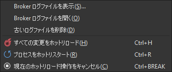
さらに、エージェントは、任意の時点でホット・リロード操作をスケジュールするAPIも提供しています：
| API | 説明 |
|---|---|
void Agent::ScheduleReload(void);
|
ホットリロード操作をスケジュールし、WantsReload()ができるだけ早く true を返すようにします。 |
これは、独自のショートカットをリッスンしたり、カスタムデバッグメニューなどからLive++ホット再ロードを呼び出したりする場合に便利です。
内部的には、この操作はバックグラウンド・コンパイル処理をトリガします。コンパイルが成功すると、新しいコードがアプリケーションにロードされ、既存のコードとリンクされます。当然、元の実行ファイルに含まれていない関数も正しくリンクされます。
ヒント
コンパイラとリンカの出力は常に、Broker UI の[Log]タブと Visual Studio や Rider などの IDE の出力ウィンドウの両方に記録されます。これにより、出力ウィンドウの行をダブルクリックするか、F8 を押すことで、エラーの場所に移動できます。また、Broker UI の [Log]タブでエラーの該当行をダブルクリックすると、その行が強調表示され、IDE がエラーの場所に移動します：

例
Live++には、これを示す"01_HotReload"というサンプルが同梱されています。
ユニティ分割
Live++ は、登録されたモジュールの一部である unity/jumbo/blob ファイルを自動的に検出して分割します。そのようなすべてのunityファイルに対して、Live++は、次の例に示すように、含まれるすべての.cppファイルを独自の.objファイルに分割し、再構築と再コンパイルに使用します：
// these are the contents of Unity.cpp:
#include "FileA.cpp"
#include "FileB.cpp"
#include "FileC.cpp"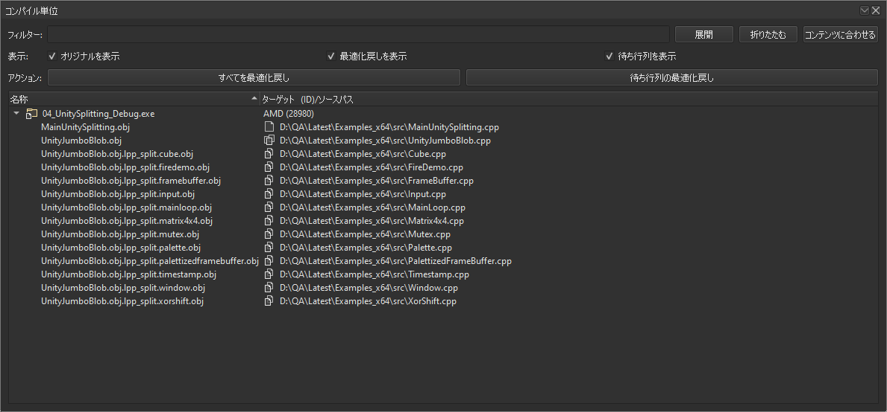
Unityの分割は、統合/Jumbo/BLOB/Amalgamated ファイルの分割を有効にする設定を利用することで、プロジェクトごとに制御できます。より細かく制御したい場合は、分割したいすべてのコンパイランドのコマンドラインオプションのプリプロセッサ定義としてLPP_FORCE_UNITY_SPLITTINGを設定することで、コンパイランド単位で unity 分割を有効にすることができます。
注意
Unity 分割は、unity ファイルによってインクルードされた .cpp ファイルのどれかが最初にタッチされた時だけ実行されなければなりません。これは、unityファイルに含まれるすべての翻訳ユニットの再コンパイルにつながりますが、多くの場合、この操作は、特に最近のマルチコアマシンでは、unityファイル全体を再コンパイルするのと同じくらい高速です。
例
Live++には、これを実演する"04_UnitySplitting"というサンプルが同梱されています。
停止したプロセス
通常、Live++は、ホット・リロード操作がスケジュールされるとすぐに、変更されたファイルを自動的に収集し、バックグラウンドでコンパイルを開始します。しかし、Live++が有効なプロセスがデバッガーに保持されている場合（ブレークポイントなど）、プロセスは何も進行しないため、Live++はそのプロセスと通信できません。
Visual Studio および Rider デバッガー
Visual Studio または Rider でデバッグする場合、Live++ はプロセスを Live++ と通信を継続できるモードにするために必要なアクションの自動化を試みます。成功すると、Broker UI ログに"自動化されたデバッガーを PID が XXXXX のプロセスにアタッチ" と表示され、Live++ は変更をコンパイルしてコード パッチをインストールします。その後、プロセスは再びデバッガの同じ命令で保持されます。
その他のデバッガ
自動化に失敗した場合、または WinDbg などの他のデバッガーを使用している場合、UI ログに"PID が XXXXX のターゲットプロセスを待っています。プロセスがデバッガーで保留中の場合は、「続行」(Visual Studio および Rider では F5) を押します。"ホット・リロード操作のスケジューリング時に表示されます。アプリケーションを再開すると、Live++がコンパイルし、行った変更をインストールします。コンパイルが終了するまで、プロセスは新しい命令を実行しません。Live++ によってパッチがインストールされると、プロセスは自動的に実行を続行します。
この場合の一連の流れを以下に示します：
- デバッガがブレークポイントに遭遇し、プロセスを停止します。
- 通常どおりデバッグが開始されます。
- 現在デバッグ/実行中のコードに1つまたは複数の変更を加え、Live++のホット・リロードを呼び出します。
- Live++は変更されたファイルをピックアップし、デバッガで処理を続行するのを待ちます。
- F5キーを押すなどしてプロセスを続行します。
- プロセスはまだ停止していますが、今度はLive++によって停止されます。
- Live++はあなたの変更をコンパイルし、コード・パッチをインストールし、プロセスを続行させます。
- プロセスは中断したところから実行を続けます。
注意
このシナリオでは、Live++はインストールしたフックを呼び出しません。
Natvisビジュアライゼーション
Natvis 可視化は、Visual Studio デバッガによって理解されるカスタム タイプの可視化ルールです。
通常、.natvisファイルは Live++ で作成されたパッチに対してデバッガーによって自動的にピックアップされます。しかし、そうでない場合は、これらのファイルをユーザー固有またはシステム全体のNatvisディレクトリに置くことが役立ちます。
ホット・リスタート
アプリケーションを終了して再起動するときに発生するビルド時間とリンク時間に対処するため、Live++は、ロードされたデータと内部キャッシュを持続させたままアプリケーションを再起動するメカニズムを提供しています。
アプリケーションがメイン・ループに入ると、メイン・ループに入る前に呼び出されるスタートアップ関数などに加えられた変更の効果を確認するために、アプリケーションを再起動する必要があります。この場合、通常は次のような一連のイベントが発生します：
- ユーザーがアプリケーションを閉じる。
- ビルド・システムが実行ファイルをリンクする。
- ユーザーがアプリケーションを再度起動する。
- Live++でモジュールが有効になる。これにより、PDBからデバッグ・データがロードされ、内部キャッシュが構築されます。
ステップ2.と4.は、特にAAAプロジェクトではかなりの時間がかかることがあります。Live++が提供するホット・リスタート機能を利用することで、この状況をかなり改善することができます：
- Live++は、興味のあるすべてのプロセスに再起動の準備を指示します。
- プロセスは、何らかのクリーンアップを実行したい場合に備えて、オプションのコードを実行します。
- Live++は、PDBからロードされたすべてのデータと内部キャッシュを維持したまま、関係するすべてのプロセスを再起動します。
- Live++ではモジュールが有効になっている。これにより、既存のデバッグ・データとキャッシュが再利用され、以前にコンパイルされたパッチがインストールされる。
ホット再起動メカニズムを使用すると、リンク時間とLive++のロード時間がほとんど完全になくなることに注意してください。
例
Live++には、これを実証する"08_HotRestart"というサンプルが同梱されています。
ホット・リスタートの要求
ホットリスタートのリクエストには4つのオプションがあります：
-
デフォルトのショートカットctrl + alt + R を押します。このショートカットは、Live++アプリケーションにフォーカスがあるかどうかに関係なく機能します。
-
ツール・メニューから"プロセスをホットリスタート"を実行する：
これにより、現在Brokerに登録されているすべてのプロセスにホット再起動要求が送信されます。
-
Brokerの処理ビューで1つまたは複数のプロセスを選択し、右クリックしてコンテキスト・メニューを開き、"選択したプロセスをホットリスタート"を選択します：
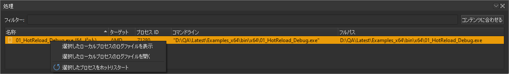
これにより、個々のプロセスをホットスタートさせることができ、クライアント/サーバシナリオで役立ちます。
-
さらに、エージェントは、任意の時点でホットリスタート処理をスケジュールするための API も提供します：
API 説明 void Agent::ScheduleRestart(LppRestartOption option);ホット再起動操作をスケジュールし、 WantsRestart()ができるだけ早く true を返すようにします。これは、独自のショートカットをリッスンしたい場合や、カスタムデバッグメニューなどから Live++ ホット再起動を呼び出したい場合に便利です。
デフォルト・エージェント
デフォルト・エージェントを使用する場合、内部実装がホット・リスタート要求に自動的に応答します。
同期エージェント
同期エージェントを使用する場合、以下のAPIを使用してホット再起動要求に応答する必要があります：
| API | 説明 |
|---|---|
bool Agent::WantsRestart(void);
|
Live++ がプロセスのホット・リスタートを望んでいるかどうかを返します。 |
void Agent::Restart(LppRestartBehaviour behaviour, unsigned int exitCode, const wchar_t* const commandLineArguments);
|
指定 さ れた動作を尊重 し てプ ロ セ ス を再起動 し ます。返されません。 |
再起動の準備
ホット リスタートが要求された後、Live++ は、再起動の準備をする必要があることを関係するすべてのプロセスに通知します。再起動が要求されると、アプリケーションは定期的に（たとえばフレームごとに）bool WantsRestart()を呼び出してtrueを返す必要があります。再起動を開始する前に、任意のクリーンアップ（ファイルのフラッシュなど）を実行できます。
再スタートの開始
アプリケーションが任意のクリーンアップタスクを実行し終わったら、すぐにvoid Restart(LppRestartBehaviour behaviour, unsigned int exitCode, const wchar_t* const commandLineArguments)呼び出す必要があります。これは Live++ にプロセスの再起動を知らせ、プロセスを終了します。const wchar_t* const commandLineArgumentsパラメータはオプションで、再起動されたプロセスに渡されます。nullptr使用すると、元のコマンドライン環境でプロセスを再起動します。
再起動されたプロセスのいずれかにアタッチされている Visual Studio または Rider デバッガは、ホット再起動操作が完了した後、Live++ によって対応するプロセスに自動的に再アタッチされます。
終了時の動作は、次の表に示すように、LppRestartBehaviour引数によって異なります：
| 再起動時の動作 | 説明 |
|---|---|
| LPP_RESTART_BEHAVIOUR_DEFAULT_EXIT | 指定された終了コードでExitProcess()呼び出します。 |
| LPP_RESTART_BEHAVIOUR_EXIT_WITH_FLUSH | 指定された終了コードでexit()呼び出します。 |
| LPP_RESTART_BEHAVIOUR_EXIT_WITHOUT_FLUSH | 指定された終了コードで_Exit()呼び出します。 |
| LPP_RESTART_BEHAVIOUR_INSTANT_TERMINATION | 指定された終了コードでTerminateProcess()呼び出します。 |
ヒント
再起動を要求した後、アプリケーションはオプションのクリーンアップタスクを実行し、void Restart(LppRestartBehaviour behaviour, unsigned int exitCode, const wchar_t* const commandLineArguments)呼び出すために10秒まで許可されています。この時間を超えると、Live++はこのプロセスの再起動を放棄します。
ホットフィックス
Live++は、裏で構造化例外処理（SEH）使用するカスタムのベクトル化例外ハンドラ（VEH）を介して、すぐに使用できる強力なエラー回復を提供します。Live++のホット・リロード機能と組み合わせることで、アクセス違反やゼロによる除算など、致命的なエラーからの回復が可能になります。Live++の例外ハンドラを使用すると、プロセスが未処理の例外（アクセス違反など）を発生させるたびに、このハンドラが呼び出されます。
Visual Studio や Rider などのデバッガがプロセスにアタッチされている場合、デバッガは常に例外を処理する最初のチャンスを得ます。

デバッガでプロセスを続行すると、Live++の例外ハンドラが起動され、Brokerのダイアログが開いて、この例外の処理方法を決定することができます：
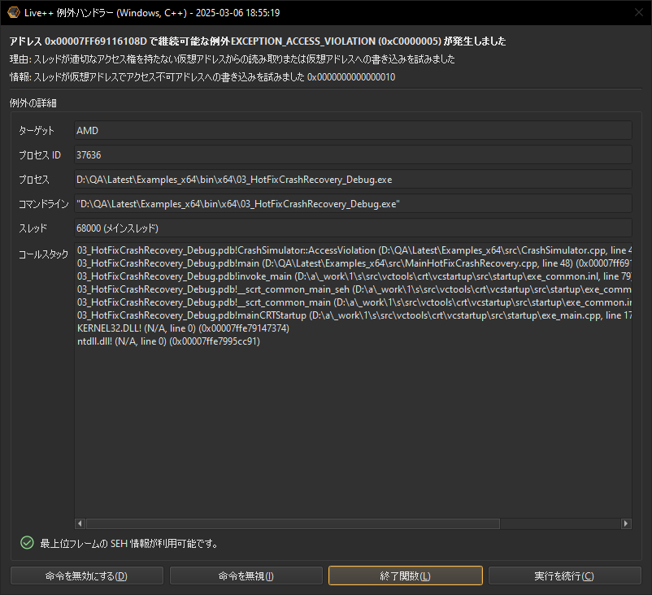
表示されたコール・スタックの行をダブルクリックすると、Visual Studio または Rider でその場所に対応するソース・ファイルが開きます。
例外ハンドラが提供するオプションは以下のとおりです：
-
"命令を無効にする":
フォールトを起こしたマシン命令を完全に無効にします。これは、再コンパイルが可能な独自のモジュール/ソースファイルから例外が発生した場合に便利なオプションですが、Visual Studio Runtime のようなサードパーティのコードなどには決して使用しないでください。 -
"命令を無視":
フォールトを発生させたマシン命令を一度だけ無視します。次に対応する関数が呼び出されたとき、その間にコードが再コンパイルされない限り、その命令は同じ例外を引き起こします。 -
"終了関数":
現在の関数を離れ、親関数で実行を継続する。さらに、完全なSEH情報が利用可能な場合、スタックは巻き戻され、ローカル変数はデストラクタが呼び出されます。 -
"実行を続行":
この例外を一旦無視して実行を続ける。この例外は、もしあれば、次にインストールされる例外ハンドラに渡される。最後にインストールされた例外ハンドラが例外を処理する機会を得た後、プロセスは（デバッガがアタッチされていれば）デバッガ内で停止するか、終了します。
例外ハンドラ・ダイアログが表示されている間は、通常どおりLive++を使用してコードを変更したり再コンパイルしたりすることができます。ただし、新しいコードはバックグラウンドでインストールされますが、プロセスの実行は障害発生時点から継続されるため、問題の例外をどのように処理するか決定する必要があることに注意してください。
注意
このシナリオでは、Live++はコードの再コンパイル時にフックを呼び出しません。
ヒント
実行ファイルでSEH情報を利用できるようにするには、次のコンパイラ設定を有効にする必要があります：
C/C++ -> Code Generation -> Enable C++ Exceptions -> Yes with SEH Exceptions (/EHa) です。
SEH情報は、現在の関数を離れるときにスタックを巻き戻すためにのみ必要です。例外ハンドラがSEH例外情報を持っていない場合でも、問題なく動作しますが、スタック巻き戻しは実行されません。
例
Live++には、これを示す"03_HotFixCrashRecovery"というサンプルが同梱されています。
ホット・デオプティマイズ
コードをその場で最適化解除することで、アプリケーションのデバッグ性と反復時間のバランスをとることができます。最適化されていないデバッグビルドは、最適化されたリテールビルドよりもはるかにデバッグしやすいのですが、開発中に使用するには遅すぎることがよくあります。一方、最適化されたビルドははるかに優れたパフォーマンスを提供しますが、デバッグが非常に困難です。
これを緩和するために、Live++ は、実行中のアプリケーションで、コードの最適化解除、コードのデバッグ、完全に最適化されたビルドへの復帰を簡単に行える機能を提供します。Hot-Deoptimize 機能を使用する場合、翻訳単位は必要に応じて最適化解除されるため、初期費用は発生しません。これは他のアプローチとは異なり、さらに Hot-Deoptimize は IDE に完全に依存せず、サポートされているすべてのプラットフォームで使用できます。
これは、最適化フラグが無効になる以外は、元のコンパイラー・オプションを使用してファイルを再コンパイルする。これは、マクロを定義するために使用されるプリプロセッサ定義やその他のフラグが、最適化解除バージョンでも設定されることを意味します。アサーションなどの機能は、デバッグビルドでのみ定義されるマクロを使用することが多いからです。
Live++が提供するオプションは以下の通りです：
- Brokerのコンパイル単位ビューで1つまたは複数のファイルを選択し、右クリックしてコンテキスト・メニューを開き、選択したコンパイル単位の最適化を切り替える選択すると、選択したコンパイランドが即座に最適化解除されます。
- また、選択したコンパイル単位を最適化戻しのために待ち行列に入れる選択することで、後で最適化を解除するためにコンパイランドをキューに入れることもできます。キューに入れたコンパイランドの最適化は、待ち行列の最適化戻しアクションを選択することで開始できます。
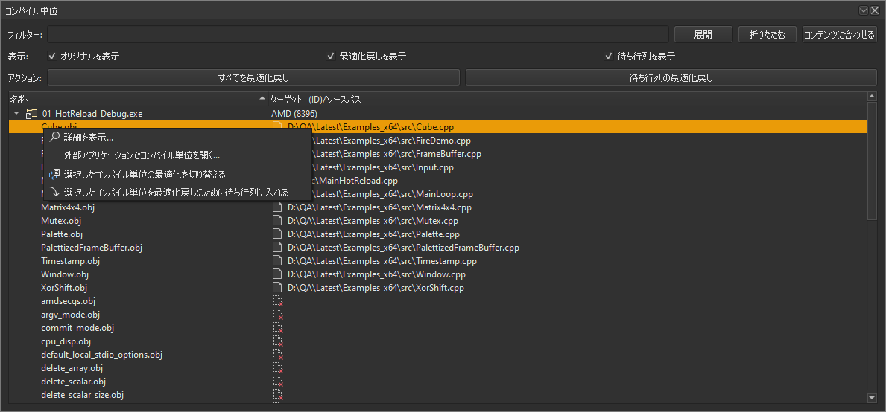
- Visual Studio または Rider のデフォルトのショートカットctrl + alt + O を押すことで、現在開いているファイルの最適化状態を切り替えることができます。
- また、ファイルの先頭にマクロLPP_DISABLE_OPTIMIZATIONSを置き、変更をホット・リロードすることでも、ファイルの最適化状態を切り替えることができます。この方法の欠点は、Live++ API"LivePP/API/x64/LPP_API_x64_CPP.h "をこのファイルで表示する必要があり、最適化解除の状態をコンパイル単位ビューで追跡できないことです。
- キューに入れられたコンパイランドは、コンテキスト・メニューの選択したコンパイル単位を最適化戻しのために待ち行列に入れる選択することで、再びキューに入れることができます。
- すべてのコンパイランドを元の最適化状態に戻したい場合は、すべてを最適化戻しアクションを選択します。
現在最適化解除状態にあるソースファイルはコンパイル単位ビューで の記号で、現在キュー状態にあるソースファイルは
の記号で、現在キュー状態にあるソースファイルは の記号で、それぞれ示されます：
の記号で、それぞれ示されます：
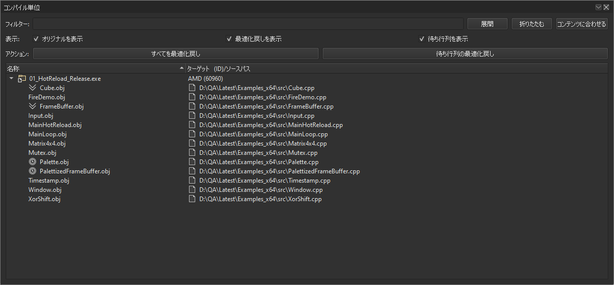
例
Live++には、これを示す"05_ToggleOptimizations"というサンプルが同梱されています。
マルチプロセス編集
ある種のクライアント/サーバーやエディター/ゲームのセットアップでは、変更を複数のプロセスや同じアプリケーションの複数のインスタンスに一度にホット・ロードできると、非常に便利です。Live++では、これはすぐに機能し、特別なセットアップを必要としません。
Brokerの処理ビューには、現在Live++に登録されているすべてのプロセスが表示されます：
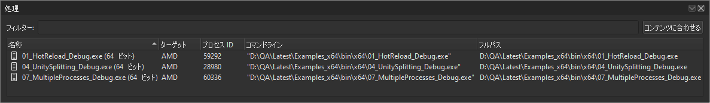
Live++がサポートするすべての操作は、登録されている数に関係なく、影響を受けるプロセスまたは選択されたプロセスに対して実行されます。Live++は、複数のモジュールまたはアプリケーションの一部であるソース・ファイルの変更が、影響を受けるすべてのプロセスにコンパイルされ、ホット・ロードされることを自動的に確認します。
さらに、Live++は、実行可能ファイルがリンクされなかったり、ディスク上で変更されなかったりしても、すべてのコード変更をLive++アプリケーションの後続インスタンスにロード中に自動的に注入し、新しい動作をもたらします。その後、コードが変更されると、実行中のすべてのプロセスにホット・ロードされます。
例
Live++には、これを示す"07_MultipleProcesses"というサンプルが同梱されています。
ネットワーク編集
マルチプロセス編集と同様に、Live++を任意のマシン上で実行されているリモートプロセスで動作させるために、特別なコード設定は必要ありません。唯一の要件は、それらのリモート・プロセスがLAN接続を介してローカルBrokerに接続することであり、これは次のように設定する必要があります：
-
ローカル・マシンでBrokerを起動し、ウィンドウ・タイトルに表示されているホスト名またはIPアドレス（例：192.168.8.147）をメモする：

-
リモートマシンでBrokerを起動し、編集 -> グローバル設定... -> ネットワークに進み、Brokerを実行するローカルマシンのホスト名またはIPアドレスを入力し、保存を押します：
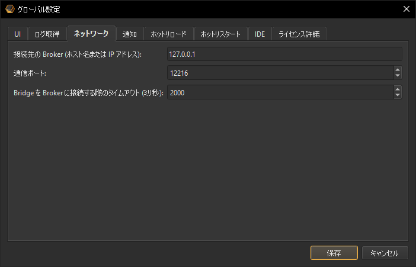
これにより、リモートマシンのグローバル環境設定が保存されます。
ネットワーク編集を機能させるには、まずローカルマシンのアプリケーションを起動し、次にリモートマシンのアプリケーションを起動する必要があります。ただし、Live++はローカルとリモートのプロセスが混在していても、また同じアプリケーションの複数のインスタンスがどのマシンにあっても動作します。
注意
Live++が必要とする情報のほとんどは、ローカル・マシン上でのみ利用可能であるため、コードの変更はローカル・マシン上でのみピックアップされ、コンパイルされます。
接続されたマシンとプロセスは、それぞれターゲットビューと処理ビューで確認できます：
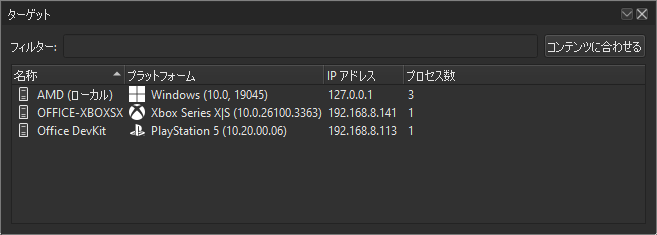
例
Live++には、これを示す"10_NetworkedEditing"というサンプルが同梱されています。
ライセンス
アクティベーション
Live++を使用する前に、まずマシン上でライセンスをアクティベートする必要があります。これを行うには、Brokerを起動し、メインメニューからライセンス許諾 -> アクティベート...選択し、ライセンスをアクティベートするプラットフォームと言語を選択します（例：Windows、C++）。アクティベーションコードとユーザーIDを入力するダイアログが開きます：
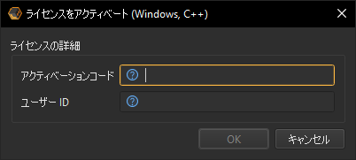
アクティベーションコードは、Live++の購入時に配布されたもので、XXXX-XXXX-XXXXという形式の12文字のキーです。
ユーザーIDは自由に選択することができ、指定されたアクティベーションコードに関連付けられたライセンスプール内であなたのライセンスを識別します。これは、オフラインでライセンスを無効化する必要がある場合に必要となります。例えば、既存のライセンスを無効化せずにマシンを再インストールした場合などです。一般的なユーザーIDの例は、"Jane home office "または"John laptop "です。
ダイアログで「OK」を押すと、Live++は入力されたデータを使ってアクティベーション・サーバーにコンタクトしようとします。指定されたアクティベーションコードが有効な場合、Live++はあなたのマシンに関連付けられ、あなただけが使用できるライセンスを生成します。それ以外の場合は、代わりにエラーが表示されます。
注意
会社のファイアウォールやプロキシサーバーが原因でアクティベーションサーバーへの接続に問題が発生した場合は、サポートにお問い合わせください。
アクティベーションの解除
マシンの再インストールが必要な場合や、同僚が使用できるようにライセンスを失効させたい場合など、ライセンスの失効が必要な場合は、Brokerのメインメニューからライセンス許諾 -> 非アクティブ化...進み、WindowsやC++など、ライセンスを失効させたいプラットフォームと言語を選択します。これにより、アクティベーション・サーバー上のライセンスが無効化されます。
無料トライアル
まだライセンスを持っておらず、30日間の無料トライアルを試したい場合は、Live++ホット・リロードを起動すると、次のダイアログがポップアップします：
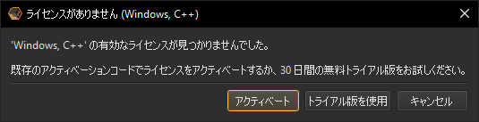
このダイアログでトライアル版を使用選択すると、Live++がアクティベーション・サーバーからトライアル・ライセンスを取得します。
コマンドライン ツール
Live++ インストールのCLIディレクトリにあるコマンド ライン ツールを使用して、ライセンスのアクティベーションとアクティベーション解除を自動化することもできます。例えば、"LPP_License_x64_CPP.exe"はWindows、C++ のライセンス管理を行います。
各ツールは、それぞれ"--activate "と"--deactivate "オプションでライセンスの有効化と無効化を行うことができます。詳細については、統合された"-h"ヘルプオプションを参照してください。

GUI
Live++のBroker GUIは、登録されたターゲット、プロセス、モジュール、およびコンパイラランドの概要を提供する、ドッキングおよびフローティング可能な複数のウィンドウとビューで構成されています。
ターゲット
ターゲットビューには、接続されているローカルおよびリモートのすべてのマシン、そのプラットフォーム、IPアドレス、および登録されているプロセス数が表示されます。
処理
処理ビューには、登録されているすべてのプロセス、そのターゲット、プロセスID、実行ファイルへのフルパス、プロセスが起動したコマンドラインが表示されます。
さらに、処理ビューでは、右クリック時に以下のオプションを含むコンテキストメニューが表示されます：
-
"選択したローカルプロセスのログファイルを表示":
選択したプロセスに関連するログファイルを Windows エクスプローラーに表示します。 -
"選択したローカルプロセスのログファイルを開く":
対応するデフォルトのアプリケーションを使用して、選択したプロセスに関連するログファイルを開きます。 -
"選択したプロセスをホットリスタート":
選択したプロセスにホット再起動要求を送信します。
モジュール
モジュールビューには、ロードされたすべてのモジュール、ロードされたプロセスのID、サイズ、ロードされたアドレス範囲が表示されます。
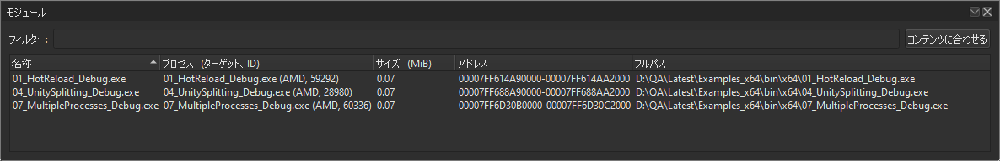
コンパイル単位
コンパイル単位ビューには、すべてのモジュールとそのコンパイランドが、それぞれのコンパイランドのソースパスとともに階層ツリーで表示されます。
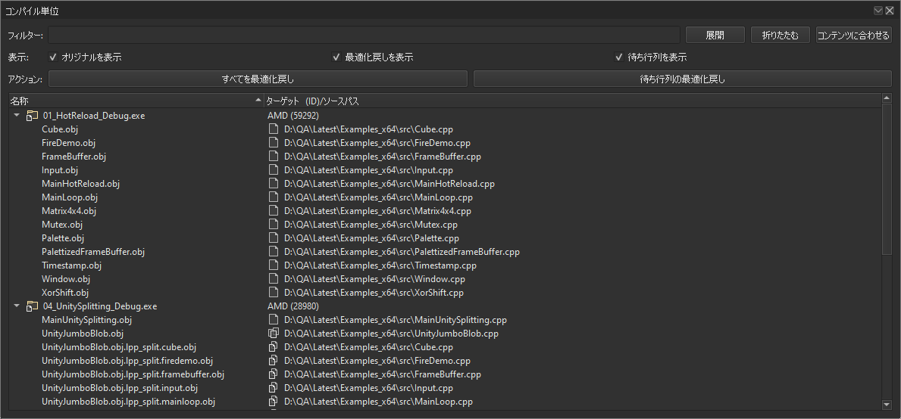
ツリービューでコンパイランドをダブルクリックすると、Visual Studio または Rider の実行中のインスタンスで対応するソースファイルが開きます。
さらに、コンパイル単位、右クリック時に以下のオプションを持つコンテキスト・メニューも提供されます：
-
"詳細を表示...":
コンパランドの詳細を別のダイアログで表示します。 -
"外部アプリケーションでコンパイル単位を開く...":
対応するデフォルトのアプリケーションを使用して、選択したコンパイランドのソースファイルを開きます。 -
"選択したコンパイル単位の最適化を切り替える":
選択したコンパランドの最適化状態を切り替えます。 -
"選択したコンパイル単位を最適化戻しのために待ち行列に入れる":
選択したコンパイランドを後で最適化解除するためにキューに入れます。
コンパイル単位の詳細ダイアログでは、PDB パス、コンパイラーパス、再コンパイルに使用したコマンドラインなど、各コンパイルランドの詳細情報が表示されます。
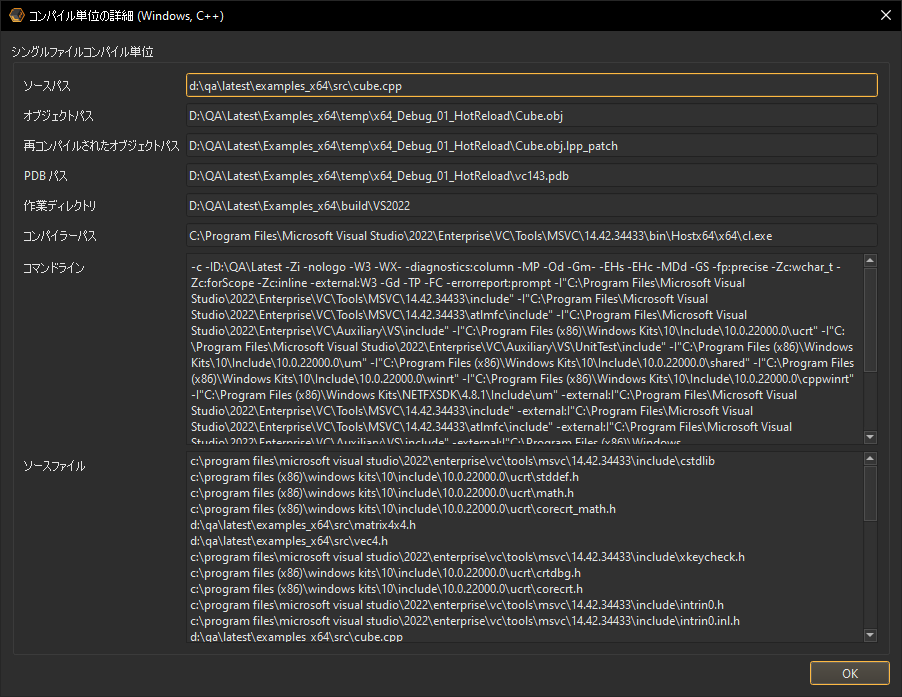
グローバル環境設定
グローバル環境設定は、Broker のメインメニューから編集 -> グローバル設定...を選択することで設定できます。Brokerの外観や動作をカスタマイズするためのいくつかのグローバルな設定を提供し、常にBrokerディレクトリのglobal_preferences.jsonに保存されます。
オプションのglobal_preferences_default.jsonファイルを提供することでデフォルト設定を定義し、同じディレクトリにオプションのglobal_preferences_override.jsonファイルを提供することで設定を上書きすることができます。Live++は、以下の順序でファイルを読み込みます：
- global_preferences_default.json
- global_preferences.json
- global_preferences_override.json
この動作は、意味のあるデフォルト値を設定したり、チーム全体に対して特定のプリファレンスの値を強制したりしたい場合に便利です。
UI
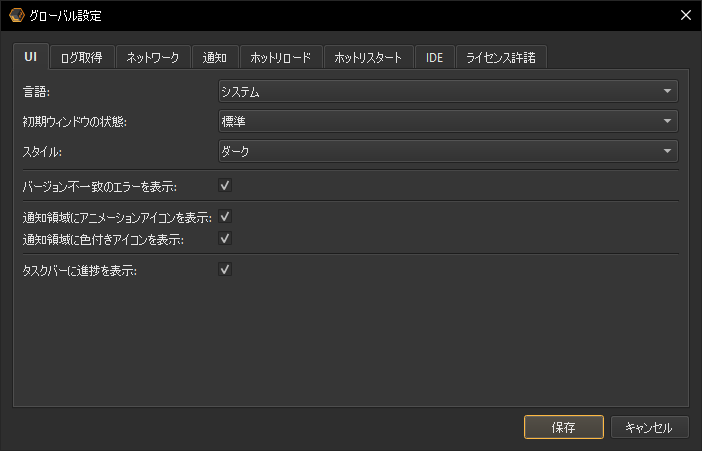
-
"言語:"
言語を選択します。 -
"初期ウィンドウの状態:"
Broker を通常のサイズで起動するか、最大化するか、システムトレイに表示するかを選択できます。 -
"スタイル:"
明るいスタイルと暗いスタイルを選択できます。 -
"バージョン不一致のエラーを表示:"
これを有効にすると、Agent と Broker の API バージョンが一致しない場合、Broker はモーダルダイアログでエラーを表示します。 -
"通知領域にアニメーションアイコンを表示:"
これを有効にすると、操作の進行中に通知領域のアイコンがアニメーション表示されます。 -
"通知領域に色付きアイコンを表示:"
これを有効にすると、最後の操作が成功したかエラーになったかによって、通知領域のアイコンが色分けされます。 -
"タスクバーに進捗を表示:"
これを有効にすると、操作の進行中にタスクバーがアニメーション表示されます。
ロギング
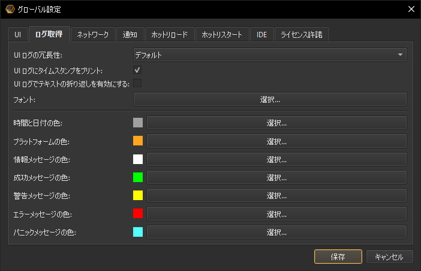
-
"UI ログの冗長性:"
デフォルトのログ出力か詳細なログ出力かをカスタマイズします。 -
"UI ログにタイムスタンプをプリント:"
UIログにタイムスタンプを出力するかどうかをカスタマイズします。 -
"UI ログでテキストの折り返しを有効にする:"
UI ログにワードラッピングを使用するかどうかをカスタマイズします。
ネットワーク
-
"接続先の Broker (ホスト名または IP アドレス):"
ローカルマシン上で実行されるプロセスは、常に127.0.0.1またはlocalhost のいずれかを使用する必要があります。リモート・マシン上で動作するプロセスは、Broker IPを適宜設定する必要があります。 -
"通信ポート:"
Bridge と Broker 間の TCP/IP 接続に使用するポート。 -
"Bridge を Broker に接続する際のタイムアウト (ミリ秒):"
BridgeがBrokerに接続するときに考慮するタイムアウト。
通知
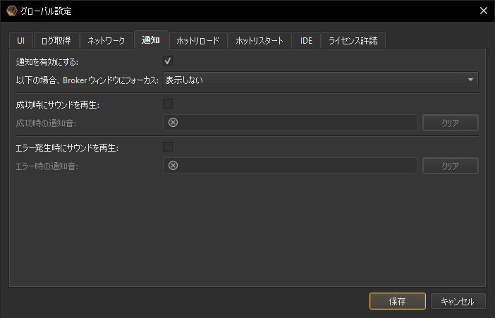
ファイルへのパスは、絶対パス、またはBrokerからの相対パスのいずれかを指定できます。
-
"通知を有効にする:"
これを有効にすると、Live++は完了した操作のトースト通知を表示します。 -
"以下の場合、Broker ウィンドウにフォーカス:"
ブローカー・ウィンドウがフォーカスされるタイミングを選択できます： never、hot-reload または hot-restart 操作時、error 時、successful 操作時、または always。 -
"成功時にサウンドを再生:","成功時の通知音:"
コンパイルが成功したときに再生する .WAV ファイルを指定します。 -
"エラー発生時にサウンドを再生:","エラー時の通知音:"
コンパイルが失敗したときに再生する .WAV ファイルを指定します。
ホットリロード
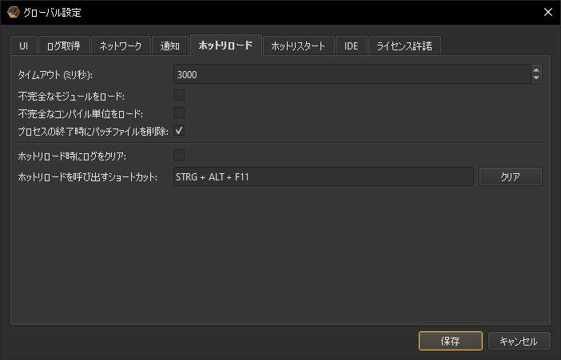
-
"タイムアウト (ミリ秒):"
ホットリロード操作をスケジューリングするときに使用するミリ秒単位のタイムアウトです。タイムアウトよりも応答が長いエージェントは、ホットリロード操作を放棄します。 -
"不完全なモジュールをロード:"
これを有効にすると、不完全なモジュールがロードされ、コンパイル単位ビューに表示されます。 -
"不完全なコンパイル単位をロード:"
これを有効にすると、未完成のコンパイランドがロードされ、コンパイル単位ビューに表示され、コンパイラ・オプションの欠落などの欠陥を検査できるようになります。 -
"プロセスの終了時にパッチファイルを削除:"
これを有効にすると、Live++パッチに属するファイルは、対応するプロセスが終了するとすぐに削除されます。 -
"ホットリロード時にログをクリア:"
これを有効にすると、ホット・リロード時に UI ログがクリアされます。 -
"ホットリロードを呼び出すショートカット:"
ホットリロードを起動するためのショートカットを設定できます。
ホットリスタート
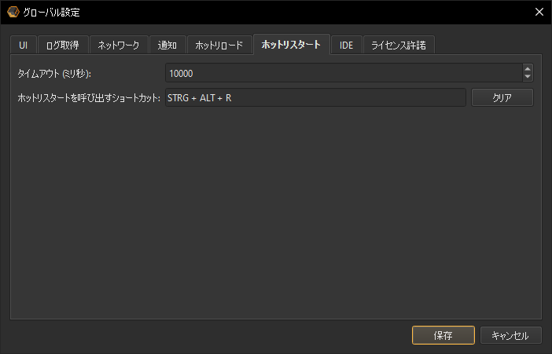
-
"タイムアウト (ミリ秒):"
ホット再起動操作をスケジュールするときに使用するミリ秒単位のタイムアウトです。応答がタイムアウトより長いエージェントは、ホット再起動操作を放棄します。 -
"ホットリスタートを呼び出すショートカット:"
ホット再起動を起動するためのショートカットを設定できます。
IDE
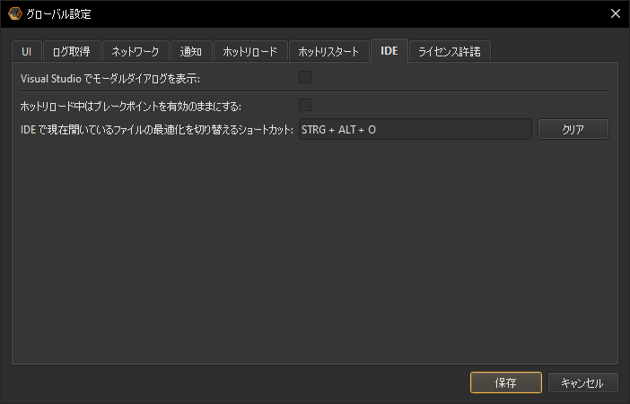
-
"Visual Studio でモーダルダイアログを表示:"
これを有効にすると、ホット再起動の操作中に Visual Studio でモーダルダイアログが表示されます。これにより、Live++操作の実行中は、Visual Studioデバッガとのインタラクションが禁止されます。
-
"ホットリロード中はブレークポイントを有効のままにする:"
これを有効にすると、ホット・ロード操作中もブレークポイントが有効になります。通常、Visual Studio および Rider のブレークポイントは、プロセスが誤って停止しないように、ホット・リロード操作中は一時的に無効になります。 -
"IDE で現在開いているファイルの最適化を切り替えるショートカット:"
Visual Studio または Rider で現在開いているファイルの最適化を切り替えるショートカットを設定できます。
ライセンス
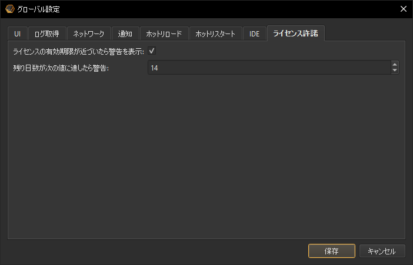
-
"ライセンスの有効期限が近づいたら警告を表示:"
これを有効にすると、Broker は現在のライセンスが期限切れになるたびに警告を表示します。 -
"残り日数が次の値に達したら警告:"
ライセンスが期限切れになりそうなときに何日分の警告を表示するかを設定できます。
プロジェクト環境設定
プロジェクト環境設定は、Brokerメインメニューの編集 -> プロジェクトの環境設定...を選択することで設定できます。これらは、Live++の動作をカスタマイズするためのプロジェクト固有の設定を提供し、任意の.jsonファイルに保存されます。
一般
プロジェクト環境設定を使用する場合、2つのオプションがあります：
-
次の例に示すように、エージェントを作成するときに、プロジェクト固有の .json ファイルを引数として渡します：
// create a synchronized Live++ agent, loading the required project preferences. // the path to load the preferences from can be absolute, or relative to this application. lpp::LppSynchronizedAgent lppAgent = lpp::LppCreateSynchronizedAgentWithPreferencesFromFile(nullptr, L"ThirdParty/LivePP", L"Preferences/continuous_compilation.json"); -
デフォルトの
lpp::LppProjectPreferencesインスタンスを作成し、エージェントを作成する際の引数として渡す：// disable unity splitting in the preferences lpp::LppProjectPreferences prefs = lpp::LppCreateDefaultProjectPreferences(); prefs.unitySplitting.isEnabled = false; // create a default Live++ agent with the project preferences lpp::LppDefaultAgent lppAgent = lpp::LppCreateDefaultAgentWithPreferences(nullptr, L"ThirdParty/LivePP", &prefs);
エージェントを作成するときに、.jsonファイルへのパスも環境設定インスタンスも渡さない場合、Live++は、すべてのプロジェクト環境設定のデフォルト値を想定します。
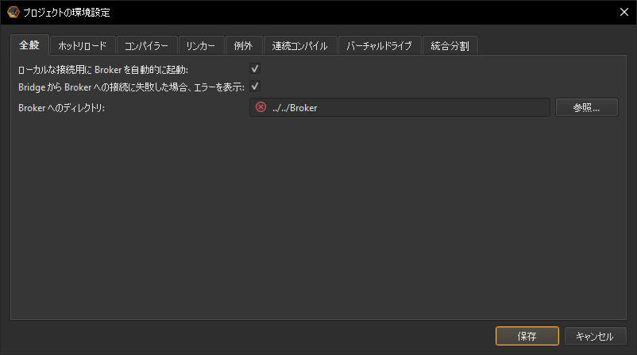
-
"ローカルな接続用に Broker を自動的に起動:"
これを有効にすると、Agent がターゲットアプリケーションにロードされるとすぐに、Agent はローカル接続用の Broker を自動的に起動します。 -
"Bridge から Broker への接続に失敗した場合、エラーを表示:"
これを有効にすると、Bridge は Broker に接続できない場合にエラーを報告します。 -
"Broker へのディレクトリ:"
Agent によって生成される Broker へのディレクトリを指定します。ディレクトリは、絶対ディレクトリまたは Agent からの相対ディレクトリのいずれかを指定します。
ホットリロード
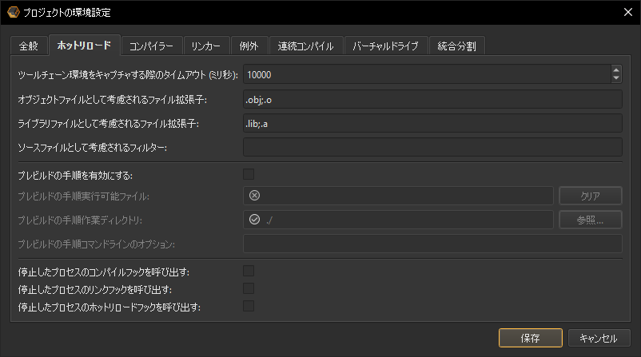
-
"ツールチェーン環境をキャプチャする際のタイムアウト (ミリ秒):"
Visual Studioのコンパイラとリンカの環境をキャプチャするときに使用するミリ秒単位のタイムアウトです。タイムアウト時間を超えて実行されたバッチファイルは、自動的に中止されます。 -
"オブジェクトファイルとして考慮されるファイル拡張子:"
オブジェクト・ファイルで考慮されるファイル拡張子のリスト。その他のファイル拡張子は無視されます。 -
"ライブラリファイルとして考慮されるファイル拡張子:"
ライブラリ ファイル用に考慮されるファイル拡張子のリスト。その他のファイル拡張子は無視されます。 -
"ソースファイルとして考慮されるフィルター:"
ソース・ファイルのフィルタリングに使用されるセミコロンで区切られた文字列のリスト。フィルタのいずれかを含むソース・ファイルは完全に無視されます。フィルター・チェックは、小文字のソース・パスを使用して実行されます。 -
"プレビルドの手順を有効にする:"
Live++ がホット・リロード操作ごとにプリビルド・ステップを実行するかどうかを指定します。 -
"プレビルドの手順実行可能ファイル:"
プリビルドステップを実行するときに呼び出される実行ファイルを選択できます。 -
"プレビルドの手順作業ディレクトリ:"
プリビルドステップを実行するときに使用する作業ディレクトリーを選択できます。 -
"プレビルドの手順コマンドラインのオプション:"
プリビルド・ステップを実行するときに呼び出される実行ファイルに渡されるコマン ド・ライン・オプションを指定します。 -
"停止したプロセスのコンパイルフックを呼び出す:"
Live++ が停止したプロセスのコンパイル・フックを呼び出すかどうかを指定します。 -
"停止したプロセスのリンクフックを呼び出す:"
Live++ が停止したプロセスのリンク フックを呼び出すかどうかを指定します。 -
"停止したプロセスのホットリロードフックを呼び出す:"
停止したプロセスに対して Live++ がホット リロード フックを呼び出すかどうかを指定します。
メモ
Live++が停止したプロセスに対してフックを呼び出すことを許可することは、デッドロックにつながる可能性があるため、潜在的に危険な操作です。停止中のプロセスでは、Live++は常に、プロセス内の他のすべてのスレッドが一時停止している間に、その受信スレッドからフックを呼び出します。停止中のスレッドが同じプリミティブを保持している間に、いずれかのフックがミューテックスなどの同期プリミティブをロックしようとすると、デッドロックが発生します。
したがって、フックの実装は、どのスレッドもいつでもサスペンドされる可能性があるという前提で動作しなければならない。
例
Live++には"14_PreBuildStep"というサンプルが同梱されており、プリビルド・ステップの設定方法が示されています。
コンパイラ
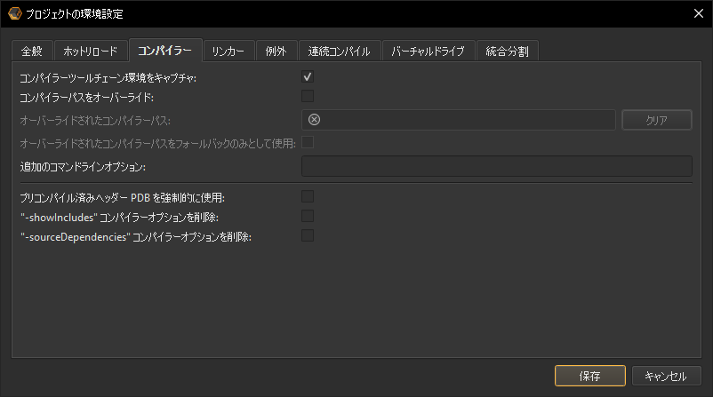
ファイルへのパスには、絶対パスとBrokerからの相対パスがあります。
-
"コンパイラーツールチェーン環境をキャプチャ:"
Live++がvcvars*.batコンパイラー・ツールチェーン環境を検索して使用するかどうかを設定します。この設定を無効にすると、カスタム ビルド システムに便利です。 -
"コンパイラーパスをオーバーライド:"
PDB で見つかったコンパイラ・パスを上書きして、Live++ がファイルを再コンパイルするときに、代わりにこのコンパイラを使用するようにします。カスタム ビルド システムを使用する場合にのみ必要です。 -
"オーバーライドされたコンパイラーパスをフォールバックのみとして使用:"
これを有効にすると、PDB で検出されたコンパイラが使用できない場合にのみ、オーバーライドされたコンパイラ・パスが使用されます。 -
"追加のコマンドラインオプション:"
パッチを作成するときにコンパイラに追加のオプションを渡すことができます。 -
"プリコンパイル済みヘッダー PDB を強制的に使用:"
これを有効にすると、再コンパイル時に各翻訳ユニットが対応するプリコンパイルされたヘッダーと同じPDBを使用するようにLive++を強制します。これは、Incredibuildをリモートエージェントとプリコンパイルされたヘッダーファイルで使用した場合に発生するコンパイラーエラーC2858の回避策として意図されています。 -
""-showIncludes" コンパイラーオプションを削除:"
これを有効にすると、一部のビルドシステムで使用されている-showIncludesコンパイラーオプションが、コードの再コンパイル時に削除されます。 -
""-sourceDependencies" コンパイラーオプションを削除:"
これを有効にすると、一部のビルド・システムで使用されている-sourceDependenciesコンパイラー・オプションが、コードの再コンパイル時に削除されます。
リンカ
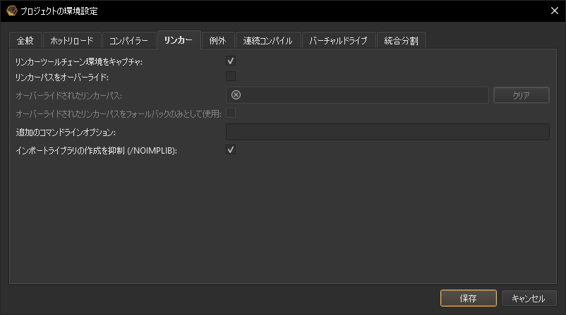
ファイルへのパスには、絶対パスと Broker からの相対パスを指定できます。
-
"リンカーツールチェーン環境をキャプチャ:"
Live++ が vcvars*.bat リンカー・ツールチェーン環境を検索して使用するかどうかを設定します。この設定を無効にすると、カスタム ビルド システムに便利です。 -
"リンカーパスをオーバーライド:","オーバーライドされたリンカーパス:"
ファイルを再コンパイルするときに、Live++が代わりにこのリンカーを使用するように、PDBで見つかったリンカー パスを上書きします。カスタム ビルド システムを使用する場合にのみ必要です。 -
"オーバーライドされたリンカーパスをフォールバックのみとして使用:"
これを有効にすると、PDB で検出されたリンカが使用できない場合にのみ、オーバーライドされたリンカ・パスが使用されます。 -
"追加のコマンドラインオプション:"
パッチを作成するときにリンカに追加のオプションを渡すことができます。 -
"インポートライブラリの作成を抑制 (/NOIMPLIB):"
パッチDLLを作成するとき、リンカによっては、シンボルをエクスポートしないDLLであっても、インポート・ライブラリの作成を要求するものがあります。Live++はこれらのインポート・ライブラリを必要としませんが、一部の古いリンカは/NOIMPLIBオプションを理解しません。
例外
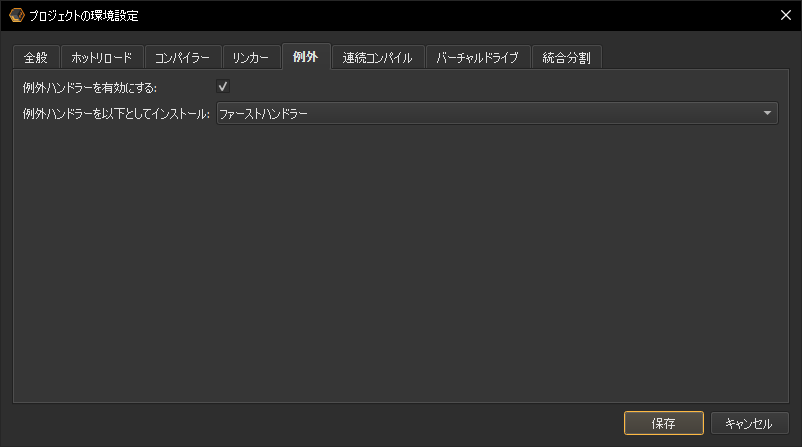
-
"例外ハンドラーを有効にする:"
これを有効にすると、Live++はHot-Fix機能用の例外ハンドラをインストールします。 -
"例外ハンドラーを以下としてインストール:"
例外ハンドラを最初のハンドラとしてインストールするか、最後のハンドラとしてインストールするかを選択できます。
連続コンパイル
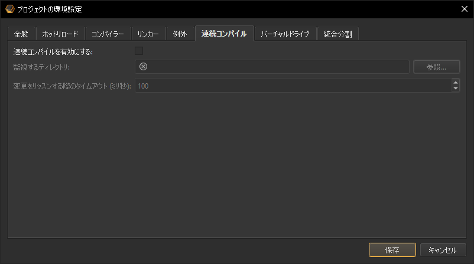
ディレクトリは、絶対ディレクトリ、または Broker からの相対ディレクトリのいずれかを指定できます。
-
"連続コンパイルを有効にする:"
連続コンパイルを有効にすると、Live++は指定されたディレクトリ（およびそのサブディレクトリ）の変更通知を待機し、タイムアウトが経過すると、変更があれば自動的にコンパイルします。 -
"監視するディレクトリ:"
連続コンパイル使用時に変更を監視するディレクトリを設定します。 -
"変更をリッスンする際のタイムアウト (ミリ秒):"
変更通知を待機しているとき、Live++はタイムアウトに達するまで後続の変更を待機します。
注記
Live++は、監視対象のディレクトリにあるファイルへの変更が検出されると、コンパイル処理を開始します。監視するディレクトリを適宜選択してください。
例
Live++には、これを示す"02_ContinuousCompilation"というサンプルが同梱されています。
仮想ドライブ
一部のビルド・システムでは、ビルド中に使用するすべてのツールが同じパスを参照できるように、コードのビルド時に一時的に仮想ドライブを設定します。しかし、コンパイルされたモジュールのPDBファイルには、この仮想ドライブ上のパスが含まれることになり、アプリケーションを起動してLive++を使用するときに、このパスが使用できなくなることがあります。以下のオプションで仮想ドライブを設定できます：
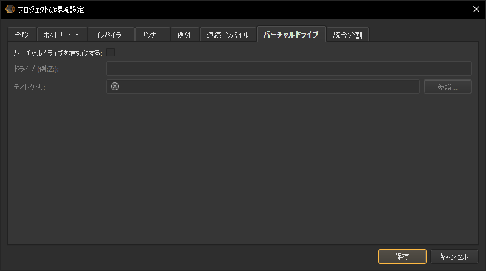
-
"ドライブ (例:Z:):"
指定したディレクトリにマッピングされる仮想ドライブの文字を指定します。文字列の後には、"Z:"（引用符なし）のようにコロンを付ける必要があります。 -
"ディレクトリ:"
上記で指定されたドライブ文字にマップされるディレクトリを設定できま す (例: C:\MyPath)。
ユニティ分割
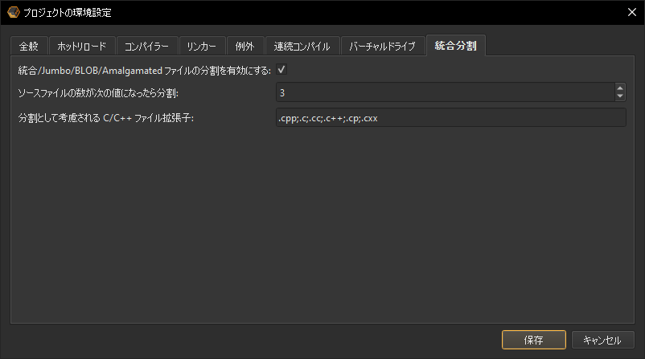
-
"統合/Jumbo/BLOB/Amalgamated ファイルの分割を有効にする:"
これを有効にすると、Live++はunityファイルの分割を行います。 -
"ソースファイルの数が次の値になったら分割:"
Live++ が分割を試みる前に、unity ファイルに含まれていなければならない .cpp ファイルの最小数を指定します。例えば、このしきい値を 3 に設定すると、3 つ以上の .cpp ファイルを含む unity ファイルだけが分割されます。 -
"分割として考慮される C/C++ ファイル拡張子:"
unity ファイルを分割するときに C/C++ ファイルとして扱われるファイル拡張子のリスト。
API
Live++は物事を理解するのは得意ですが、魔法は使えません。APIは特定のシナリオを動作させるために必要なヘルプを提供することができ、CとC++の両方から使用できるいくつかのヘッダーファイルとして出荷されています。しかし、クライアント・コードが必要とするのは、どのプラットフォーム、どの言語でも、特定のヘッダー・ファイル1つだけである。
命名規則
一般的に、全ての API シンボルは共通の接頭辞を持ちます。すべてのマクロはLPP_ で始まり、関数はLpp で始まります。C++では、名前の衝突を減らすために、すべての関数はlpp名前空間の一部です。
フレーバー
ディレクトリやパスを必要とするすべてのAPIは、2つのフレーバーがあります：引数としてconst char*取るANSIバージョンと、引数としてconst wchar_t*取るワイド・キャラクタ・バージョンです。
バージョン管理
Live++では、ヘッダーファイルとDLLが同期しないことがないように、簡単なバージョン管理スキームを使用しています。これを実現するために、ヘッダーファイルは、DLLによってエクスポートされることを期待するAPIのバージョンを定義します：
#define LPP_VERSION "2.0.0"内部的には、DLLはビルドされたAPIのバージョンを返す関数を公開しています：
LPP_API const char* LppGetVersion(void);さらに、DLL は内部的にバージョンチェックを行い、API と DLL のバージョンが一致するかどうかを返す関数を提供します：
LPP_API bool LppCheckVersion(const char* const expectedVersion);エージェントを作成する場合、API と DLL のバージョンが常に一致するように、これらのチェックが自動的に実行されます。
エージェントの検証
エージェントの作成が成功したかどうかを確認したい場合、以下のAPIを使用できます：
| API | 説明 |
|---|---|
bool lpp::LppIsValidDefaultAgent(const LppDefaultAgent* const agent); |
指定されたデフォルトエージェントが有効かどうかを返します。 |
bool lpp::LppIsValidSynchronizedAgent(const LppSynchronizedAgent* const agent); |
指定された同期エージェントが有効かどうかを返します。 |
接続コールバック
コードベースやエンジンとのより深い統合のために、Agent、Bridge、Broker の接続が成功したかどうかをチェックするために、以下のオプション API を使用したい場合があります：
| API | 説明 |
|---|---|
typedef void LppOnConnectionCallback(void* context, lpp::LppConnectionStatus status); |
コールバック関数タイプ。 |
void Agent::OnConnection(void* context, lpp::LppOnConnectionCallback* callback); |
AgentとBridge/Brokerの接続が試行された後、ユーザが指定したコンテキストと接続ステータスで指定されたコールバックを呼び出します。 |
この API はノンブロッキングでスレッドセーフであることに注意してください。Live++は、内部的に接続試行が行われる前または後にAPIが呼び出されたかに関係なく、常に最終接続ステータスでコールバックを1回呼び出します。
フック
フックを使用すると、コンパイルの進行中にプログレス・バーやメッセージ・ボックスなどを表示することで、Live++をエンジン/フレームワーク/アプリケーションに深く統合することができます。また、フックを使用して、コンパイルやリンクに関する情報やエラーを出力したり、構造的な変更をサポートすることもできます。
備考
プロセスがデバッガに保持されている場合（ブレークポイントなど）、Live++は、プロジェクト環境設定からオプトインしない限り、インストールされているフックを呼び出しません。
コンパイル・フック
コンパイル・フックを使用すると、ホット・リロード・コンパイル・プロセスにフックして、コンパイル・プロセスのさまざまな段階について通知を受けることができます。以下のコンパイルフックがサポートされています：
| API | 説明 |
|---|---|
void PrecompileHook(lpp::LppPrecompileHookId, const wchar_t* const recompiledModulePath, unsigned int filesToCompileCount); |
コンパイル開始前に呼び出されるフックを登録します。LPP_PRECOMPILE_HOOK(functionName)マクロで登録します。 |
void PostcompileHook(lpp::LppPostcompileHookId, const wchar_t* const recompiledModulePath, unsigned int filesToCompileCount); |
コンパイル終了後に呼ばれるフックを登録します。LPP_POSTCOMPILE_HOOK(functionName)マクロで登録します。 |
void CompileStartHook(lpp::LppCompileStartHookId, const wchar_t* const recompiledModulePath, const wchar_t* const recompiledSourcePath); |
ファイルのコンパイル開始時に呼ばれるフックを登録します。LPP_COMPILE_START_HOOK(functionName)マクロで登録します。 |
void CompileSuccessHook(lpp::LppCompileSuccessHookId, const wchar_t* const recompiledModulePath, const wchar_t* const recompiledSourcePath); |
ファイルのコンパイルが成功したときに呼ばれるフックを登録します。LPP_COMPILE_SUCCESS_HOOK(functionName)マクロで登録します。 |
void CompileErrorHook(lpp::LppCompileErrorHookId, const wchar_t* const recompiledModulePath, const wchar_t* const recompiledSourcePath, const wchar_t* const compilerOutput); |
ファイルのコンパイルが失敗したときに呼ばれるフックを登録します。LPP_COMPILE_ERROR_HOOK(functionName)マクロで登録します。 |
ほとんどのフックは、同様の関数シグネチャを期待するので、最初の引数として期待される異なるlpp::Lpp*HookId値は、追加の型安全性と保護を提供するためだけに役立ちます。
const wchar_t* const recompiledModulePathとconst wchar_t* const recompiledSourcePath引数は、それぞれリコンパイルされたモジュールとソースファイルへの絶対パスを提供します。
リンクフック
リンク・フックを使用すると、ホット・リロード・リンク・プロセスにフックし、リンク・プロセスのさまざまな段階について通知を受けることができます。以下のリンクフックがサポートされています：
| API | 説明 |
|---|---|
void LinkStartHook(lpp::LppLinkStartHookId, const wchar_t* const recompiledModulePath); |
リンク開始時に呼び出されるフックを登録します。LPP_LINK_START_HOOK(functionName)マクロで登録します。 |
void LinkSuccessHook(lpp::LppLinkSuccessHookId, const wchar_t* const recompiledModulePath); |
リンクが成功したときに呼び出されるフックを登録します。LPP_LINK_SUCCESS_HOOK(functionName)マクロで登録します。 |
void LinkErrorHook(lpp::LppLinkErrorHookId, const wchar_t* const recompiledModulePath, const wchar_t* const linkerOutput); |
リンクが失敗したときに呼ばれるフックを登録します。LPP_LINK_ERROR_HOOK(functionName)マクロで登録します。 |
ほとんどのフックは、同様の関数シグネチャを期待するので、最初の引数として期待される異なるlpp::Lpp*HookId値は、追加の型安全性と保護を提供するためだけに役立ちます。
const wchar_t* const recompiledModulePath引数は、リコンパイルされたモジュールへの絶対パスを提供します。
例
Live++には、フックを実演する"06_Hooks"というサンプルが同梱されています。
ホット・リロード・フック
ホット-リロードフックを使用すると、ホット-リロードプロセスにフックして、パッチ操作のさまざまな段階について通知を受けることができます。以下のホットリロードフックがサポートされています：
| API | 説明 |
|---|---|
void PrePatchHook(lpp::LppHotReloadPrepatchHookId, const wchar_t* const recompiledModulePath, const wchar_t* const* const modifiedFiles, unsigned int modifiedFilesCount, const wchar_t* const* const modifiedClassLayouts, unsigned int modifiedClassLayoutsCount); |
パッチがターゲットアプリケーションにロードされる前に呼び出されるフックを登録します。LPP_HOTRELOAD_PREPATCH_HOOK(functionName)マクロで登録します。 |
void PostPatchHook(lpp::LppHotReloadPostpatchHookId, const wchar_t* const recompiledModulePath, const wchar_t* const* const modifiedFiles, unsigned int modifiedFilesCount, const wchar_t* const* const modifiedClassLayouts, unsigned int modifiedClassLayoutsCount); |
パッチがターゲットアプリケーションにロードされた後に呼び出されるフックを登録します。LPP_HOTRELOAD_POSTPATCH_HOOK(functionName)マクロで登録します。 |
両方のフックは同じ関数シグネチャを期待するので、最初の引数として期待される異なるlpp::Lpp*HookId値は、追加の型安全性と保護を提供するためだけに役立ちます。
const wchar_t* const recompiledModulePath引数は、リコンパイルされたモジュールへの絶対パスを提供します。
const wchar_t* const* const modifiedFiles, unsigned int modifiedFilesCount引数は、変更されたファイルの絶対パスの配列を提供する。
注意
const wchar_t* const* const modifiedClassLayouts, unsigned int modifiedClassLayoutsCount引数は、最終的には変更されたクラス・レイアウトの名前の配列を提供する予定ですが、この機能はまだ利用できません。
例
const wchar_t* const* const modifiedFiles, unsigned int modifiedFilesCount引数を使用することにより、Live++と一緒に出荷されるすべてのサンプルには、特定のファイルが変更されたときにクラス・インスタンスの破棄と再構築をサポートする、パッチ前およびパッチ後のフックが含まれています。
グローバル・ホット・リロード・フック
グローバル・ホット・リロード・フックを使用すると、ホット・リロード・プロセスにフックし、ホット・リロード操作の開始と終了について通知を受けることができます。以下のグローバルホットリロードフックがサポートされています：
| API | 説明 |
|---|---|
void GlobalHotReloadStart(lpp::LppGlobalHotReloadStartHookId); |
ホットリロード操作の開始後に呼び出されるグローバルフックを登録します。LPP_GLOBAL_HOTRELOAD_START_HOOK(functionName)マクロで登録します。 |
void GlobalHotReloadEnd(lpp::LppGlobalHotReloadEndHookId); |
ホットリロード操作が終了する前に呼び出されるグローバルフックを登録します。LPP_GLOBAL_HOTRELOAD_END_HOOK(functionName)マクロで登録します。 |
両方のフックは同じ関数シグネチャを期待するので、最初の引数として期待される異なるlpp::Lpp*HookId値は、追加の型安全性と保護を提供するためだけに役立ちます。
注意
他のフックとは異なり、これらのフックはグローバルとみなされます。これは、登録されたモジュールの変更が検出されるたびに、実際にどのモジュールがフックを含んでいるかに関係なく、常に呼び出されることを意味します。構造的変更
以下の操作は「構造的変更」とみなされます：
- クラス宣言のメモリ・レイアウトの変更：
- 基底クラスの追加や削除
- 非静的データ・メンバの追加と削除
- 非静的データ・メンバの順序を変更する。
- 仮想関数テーブルのレイアウトや内容の変更：
- 多相基底クラスの追加と削除
- 仮想関数の追加と削除
- 仮想関数の順序の変更
- 仮想関数のシグネチャの変更
既存のコードとデータに構造的な変更を加える場合、Live++は、新しいコードが古いメモリ・レイアウトに割り当てられ格納されている既存のデータと正しく連動できるようにする必要があります。そのためには、既存のオブジェクトのデータを古いメモリ・レイアウトから新しいメモリ・レイアウトに移行させる必要がありますが、これはパッチ前およびパッチ後のホット・リロード・フックを使用することで実現できます。
フック・ステートメントはグローバル・スコープのどこにでも置くことができ、自動的に呼び出されます。フック文はグローバルスコープ内のどこにでも書くことができ、自動的に呼び出されます。フックは翻訳単位であればいくつでも追加することができます。
以下は、パッチ間のデータ移行を行う方法を簡略化した例です：
void MyOwnPrePatchHook(lpp::LppHotReloadPrepatchHookId, const wchar_t* const, const wchar_t* const* const, unsigned int, const wchar_t* const* const, unsigned int)
{
serialization::SerializeAndDeleteObjects(g_allObjects, g_buffer);
}
void MyOwnPostPatchHook(lpp::LppHotReloadPostpatchHookId, const wchar_t* const, const wchar_t* const* const, unsigned int, const wchar_t* const* const, unsigned int)
{
serialization::CreateAndSerializeObjects(g_allObjects, g_buffer);
}
LPP_HOTRELOAD_PREPATCH_HOOK(MyOwnPrePatchHook);
LPP_HOTRELOAD_POSTPATCH_HOOK(MyOwnPostPatchHook);基本的な考え方はいつも同じです：
- 既存のオブジェクトのデータ・メンバーをメモリにシリアライズする。
- オブジェクトを削除する。
- 新しいクラス・レイアウトを使用してオブジェクトを再作成する。
- データ・メンバーをメモリから新しいオブジェクトにシリアライズする。
これが難しいか簡単かは、使用するセットアップやエンジンによって異なります。また、パッチ後のフックで現在のレベルを再起動またはリロードするなど、他の選択肢を検討することもできます。このような特殊なユースケースを可能にするために、フックをどのように使用するかは自由です。
重要
いくつかのオブジェクトが使用中にメモリレイアウトが変更されないようにするために、同期エージェントを使用することを強くお勧めします。スタック上に作成されたオブジェクトは、新しいクラスレイアウトに移行できないことに留意してください。
例
Live++と一緒に出荷されるすべてのサンプルは、特定のファイルが変更されたときにデータ移行をサポートするホット・リロード・フックを含んでいます。
環境設定の適用
必要であれば、以下のAPIを使用して、Live++のグローバル環境設定をプログラムで適用することができます：
| API | 説明 |
|---|---|
void Agent::SetBoolPreferences(LppBoolPreferences preferences, bool value); |
LppBoolPreferences列挙群から任意のブール環境設定を設定します。 |
void Agent::SetIntPreferences(LppIntPreferences preferences, int value); |
LppIntPreferences列挙から任意の整数環境設定を設定します。 |
void Agent::SetStringPreferences(LppStringPreferences preferences, const char* const value); |
LppStringPreferences列挙型から任意の文字列環境設定を設定します。 |
void Agent::SetShortcutPreferences(LppShortcutPreferences preferences, int virtualKeyCode, int modifiers); |
LppShortcutPreferences列挙型から任意のショートカット環境設定を設定します。 |
LppBoolPreferences,LppIntPreferences,LppStringPreferences,LppShortcutPreferences列挙型の各値は、グローバル環境設定のちょうど1つのオプションに対応します。列挙型はLPP_API_Preferences.h に含まれており、列挙型の値には説明不要な名前が付けられています。
UI へのログ記録
Live++ では、以下の API を使用して Broker UI にメッセージをログ記録できます：
| API | 説明 |
|---|---|
void Agent::LogMessageANSI(const char* const message); |
Broker UI にログを送信します。 |
void Agent::LogMessage(const wchar_t* const message); |
Broker UI にログを送信します。 |
制限事項
Live++の現在のバージョンには、注意すべきいくつかの小さな制限があります。ただし、特に断りのない限り、これらはLive++インフラストラクチャの基本的な制限ではなく、計画されているがまだ利用できない機能であることに留意してください。Live++は、将来のアップデートで、これらの制限を最終的に解除する予定です。
オーバーヘッド
Live++コード・パッチがビルドおよびインストールされていない限り、Live++による実行時オーバーヘッドは、各関数の前に数バイトの未使用バイトを挿入する/FUNCTIONPADMINリンカ・オプションによるものだけです。しかし、これによるパフォーマンスへの影響は、測定可能であるとしても、ごくわずかです。
インクリメンタルリンクでビルドされたモジュールの場合、Live++は自動的にインクリメンタルリンクサンクを使用し、関数アドレスを直接パッチします。この場合、Live++を使用してパッチを当てた関数は、追加のオーバーヘッドをまったく発生させません。
それ以外のすべての場合、関数はホットパッチ技法を使用してパッチされます。ホットパッチ技法では、2バイトの短いジャンプが1回と、新しい関数への相対ジャンプが1回行われます。
Visual Studio におけるブレークポイント
Live++によってホット・ロードされたソース・ファイルに新しいブレークポイントを設定すると、Visual Studioデバッガは、対応するソース・ファイルを含むすべてのパッチにこのブレークポイントを適用しようとします。これは、特に既存のソース ファイルに新しいコード行を追加した後、すぐに混乱する可能性があります：

上の画像でわかるように、Cube.cpp の 20 行目に新しいブレークポイントを設定すると、デバッガは21 行目と 22 行目にも追加のブレークポイントを設定します。古いコードが実際にヒットされることはないため、ブレークポイントは期待通りに機能しますが、インジケータ・マージンの赤い点は誤解を招く可能性があります。
これを軽減するには、Visual Studio のTools -> Options... -> Debugging -> GeneralでRequire source files to exactly match the original versionを有効にすることをお勧めします。
デバッガーでのグローバル変数
ホット・ロードされたソース・ファイルでデバッガーに侵入すると、デバッガーは通常、グローバル変数と静的変数の値を表示できません。これは、パッチコードがダイナミックライブラリから注入されるのに対して、これらの変数がオリジナルの実行ファイルに Live されていることが原因です。
これを回避するために、Visual Studio と Rider の両方は、モジュールのコンテキストをデバッガに伝えることができるContext Operatorをサポートしています。
例を挙げると、MyApplication.exeという名前のアプリケーションのglobalNamespaceという名前空間に含まれるg_globalIntegerという名前のグローバル変数は、{,,MyApplication.exe}globalNamespace::g_globalInteger としてウォッチ・ウィンドウに追加できます。
スタック上の関数
Live++ではコード・パッチがどのように動作するかによって、現在スタック上にある関数は、そのコード変更を観察する前に再入力する必要があります。実際には、これが問題になることはほとんどなく、Live++でインライン関数を正しく処理したり、関数に新しいスタック変数を導入したりすることができます。
注
これはLive++が使用するパッチ・メカニズム固有の制限であり、変更することはできません。
スレッドローカル記憶域
スレッドローカル記憶域変数を使用することは問題ありませんが、スレッドローカル記憶域に新しいグローバル変数や静的変数を導入することは現在サポートされていません。
Clang++での動的初期化子
Clang++ でコンパイルする場合、動的イニシャライザを必要とする新しいグローバル変数やスタティック変数を導入することはサポートされていません。Live++ で再コンパイルしたパッチでは、動的イニシャライザは呼び出されません。
既知の問題
Clang++ での FASTBuild
FASTBuild を Clang で使用する場合、FASTBuild はソース・ファイルの前処理中にすべての-Iコマンドライン引数を削除します。
これは、Clang 使用時のFASTBuild のチェックが古いことが原因のようです。回避策としては、.bff スクリプトで.CompilerFamily = 'clang'を指定しないか、廃止されたチェックを行わずにソースから FASTBuild をビルドします。
'/external:I' には '/external:W' が必要です。
Visual Studio の特定のバージョンでは、Microsoft が認めているように、ツールチェーンが外部インクルード環境を PDB ファイルに正しく格納しません。
この場合、/external:Iはコンパイラによって無視されるため、再コンパイル時にインクルードが見つからない可能性が高くなります。回避策としては、プロジェクトの環境設定で/external:W0を追加のコンパイラー・オプションとして指定してください。
PDBでINCLUDEが見つからない
上記のバグと同様に、Visual Studioの特定のバージョンでもINCLUDE環境がPDBファイルに取り込まれず保存されないことがあります。
この場合も、再コンパイル時にインクルードが欠落することになります。回避策としては、プロジェクトの環境設定で、必要なインクルード・パスを追加のコンパイラー・オプションとして指定します。
停止中のプロセスでのホット・リロード
Visual Studio 2022（バージョン 17.11）で導入されたデバッガーは、CONTEXT構造体を内部的にキャッシュするようになり、Microsoftが認めているように、GetThreadContext() Win32 APIが命令ポインターの偽の値を返すようになりました。
残念ながら、Live++は、ホットロードされたプロセスがデバッグされている間、そのプロセスの命令ポインタに関する知識に依存しています。Live++ 2.8.0では回避策が実装されていますが、無関係なWin32 APIを壊すことは、かなり影響が大きいと思われるため、マイクロソフト社にこの動作を修正するよう強く求めます。
トラブルシューティング
Live++の使用中に問題が発生した場合、トラブルシューティングに特化した機能がいくつかあります。
欠落しているコンパイランド
Live++を初めてアプリケーションに統合するとき、すべてのコンパイラとリンカ・オプションが正しく設定されていなかったり、いくつかの翻訳ユニットやダイナミック・ライブラリがLive++によってロードされず、有効になっていなかったりする状況に遭遇するかもしれません。デフォルトでは、不完全な翻訳ユニットやモジュールはコンパイル単位ビューに表示されないため、どのコンパイランドがロードに失敗したかを追跡するのは難しいかもしれません。
この問題を解決するには、編集 -> グローバル設定... -> ホットリロード、不完全なモジュールをロードと不完全なコンパイル単位をロード2つのオプションを有効にしてください。これらの設定が有効な場合、Live++は、読み込みに失敗したかどうかにかかわらず、すべての翻訳ユニットとモジュールをコンパイル単位ビューに一覧表示します。
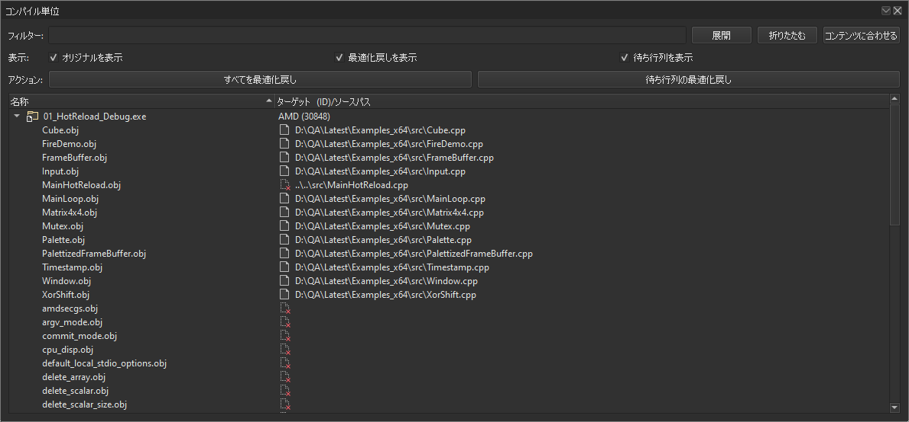
さらに、任意の翻訳ユニットまたはモジュールを右クリックして、詳細を表示...選択すると、この特定の翻訳ユニットまたはモジュールに保存されているすべての情報と、識別されたすべての不具合を表示するダイアログが表示されます：
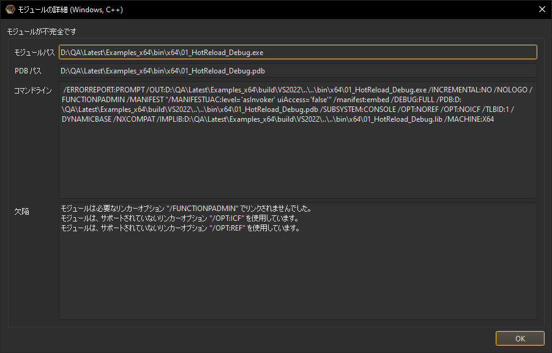
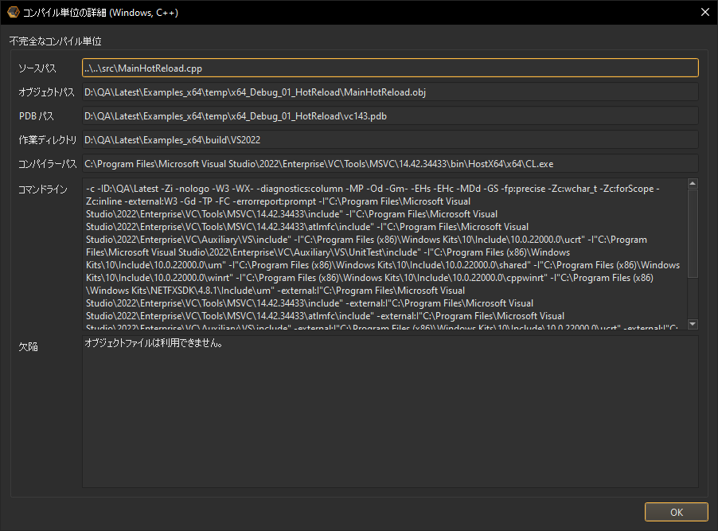
詳細コンパイル
状況によっては、Live++による変更の再コンパイルに失敗することがあります。これは、プロジェクト環境設定の欠落、異常なビルド設定、またはLive++のバグが原因である可能性があります。デバッグ -> 冗長性のあるコンパイルを切り替えるを有効にすると、このような問題の診断に役立ちます。
冗長コンパイルを有効にすると、Live++は、任意のファイルを再コンパイルする際に、以下の情報を出力します：
- コンパイラ・パス
- コンパイラ作業ディレクトリ
- コンパイラのコマンドライン・オプション
- インクルードされたファイル
冗長リンク
冗長コンパイルと同様に、デバッグ -> 冗長性のあるリンクを切り替えるある冗長リンクは、Live++がパッチのリンクに失敗する可能性のある問題を診断するのに役立ちます。
冗長リンクを有効にすると、Live++はパッチをリンクするときに以下の情報を出力します：
- リンカ・パス
- リンカの作業ディレクトリ
- リンカ・コマンド行オプション
サードパーティライブラリ
json.h
This is free and unencumbered software released into the public domain.
Anyone is free to copy, modify, publish, use, compile, sell, or
distribute this software, either in source code form or as a compiled
binary, for any purpose, commercial or non-commercial, and by any
means.
In jurisdictions that recognize copyright laws, the author or authors
of this software dedicate any and all copyright interest in the
software to the public domain. We make this dedication for the benefit
of the public at large and to the detriment of our heirs and
successors. We intend this dedication to be an overt act of
relinquishment in perpetuity of all present and future rights to this
software under copyright law.
THE SOFTWARE IS PROVIDED "AS IS", WITHOUT WARRANTY OF ANY KIND,
EXPRESS OR IMPLIED, INCLUDING BUT NOT LIMITED TO THE WARRANTIES OF
MERCHANTABILITY, FITNESS FOR A PARTICULAR PURPOSE AND NONINFRINGEMENT.
IN NO EVENT SHALL THE AUTHORS BE LIABLE FOR ANY CLAIM, DAMAGES OR
OTHER LIABILITY, WHETHER IN AN ACTION OF CONTRACT, TORT OR OTHERWISE,
ARISING FROM, OUT OF OR IN CONNECTION WITH THE SOFTWARE OR THE USE OR
OTHER DEALINGS IN THE SOFTWARE.
For more information, please refer to http://unlicense.org/
Intel® X86 Encoder Decoder (Intel® XED)
Copyright (c) 2023 Intel Corporation
Licensed under the Apache License, Version 2.0 (the "License");
you may not use this file except in compliance with the License.
You may obtain a copy of the License at
http://www.apache.org/licenses/LICENSE-2.0
Unless required by applicable law or agreed to in writing, software
distributed under the License is distributed on an "AS IS" BASIS,
WITHOUT WARRANTIES OR CONDITIONS OF ANY KIND, either express or implied.
See the License for the specific language governing permissions and
limitations under the License.
xxHash Library
Copyright (c) 2012-2020 Yann Collet
All rights reserved.
BSD 2-Clause License (https://www.opensource.org/licenses/bsd-license.php)
Redistribution and use in source and binary forms, with or without modification,
are permitted provided that the following conditions are met:
* Redistributions of source code must retain the above copyright notice, this
list of conditions and the following disclaimer.
* Redistributions in binary form must reproduce the above copyright notice, this
list of conditions and the following disclaimer in the documentation and/or
other materials provided with the distribution.
THIS SOFTWARE IS PROVIDED BY THE COPYRIGHT HOLDERS AND CONTRIBUTORS "AS IS" AND
ANY EXPRESS OR IMPLIED WARRANTIES, INCLUDING, BUT NOT LIMITED TO, THE IMPLIED
WARRANTIES OF MERCHANTABILITY AND FITNESS FOR A PARTICULAR PURPOSE ARE
DISCLAIMED. IN NO EVENT SHALL THE COPYRIGHT HOLDER OR CONTRIBUTORS BE LIABLE FOR
ANY DIRECT, INDIRECT, INCIDENTAL, SPECIAL, EXEMPLARY, OR CONSEQUENTIAL DAMAGES
(INCLUDING, BUT NOT LIMITED TO, PROCUREMENT OF SUBSTITUTE GOODS OR SERVICES;
LOSS OF USE, DATA, OR PROFITS; OR BUSINESS INTERRUPTION) HOWEVER CAUSED AND ON
ANY THEORY OF LIABILITY, WHETHER IN CONTRACT, STRICT LIABILITY, OR TORT
(INCLUDING NEGLIGENCE OR OTHERWISE) ARISING IN ANY WAY OUT OF THE USE OF THIS
SOFTWARE, EVEN IF ADVISED OF THE POSSIBILITY OF SUCH DAMAGE.